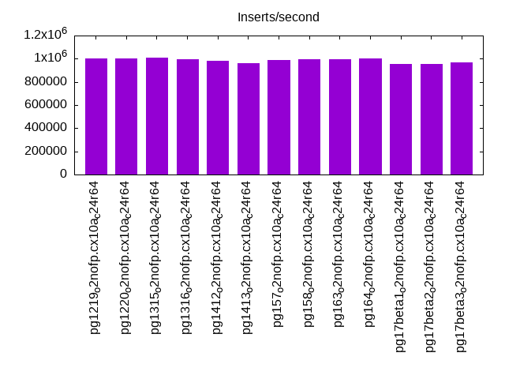
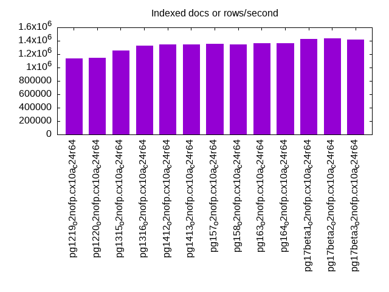
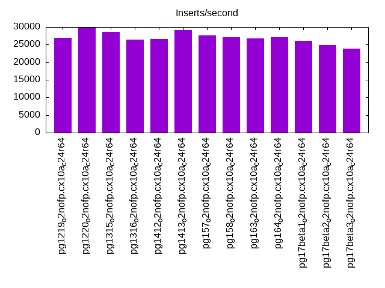
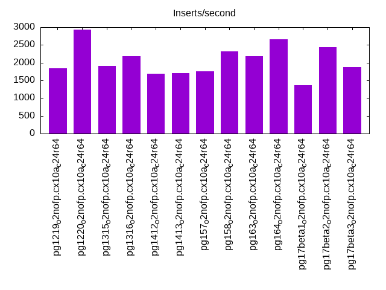
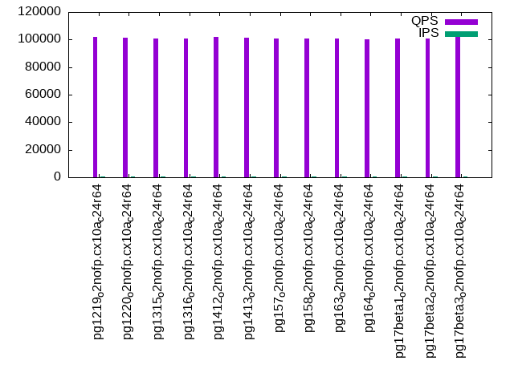
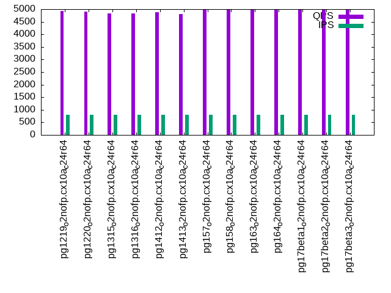
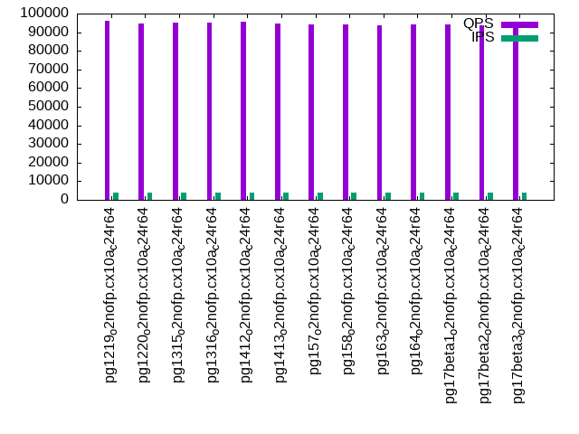
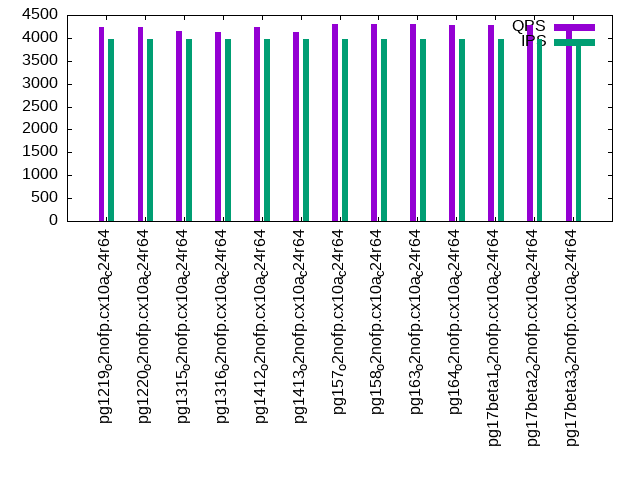
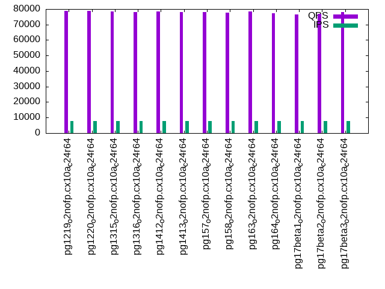
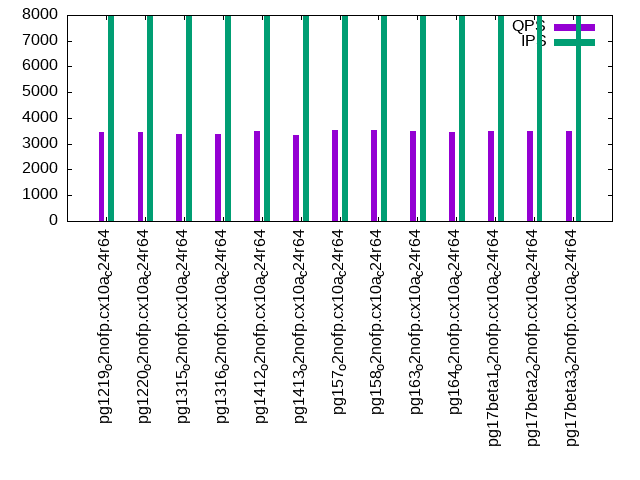

This is a report for the insert benchmark with 1024M docs and 8 client(s). It is generated by scripts (bash, awk, sed) and Tufte might not be impressed. An overview of the insert benchmark is here and a short update is here. Below, by DBMS, I mean DBMS+version.config. An example is my8020.c10b40 where my means MySQL, 8020 is version 8.0.20 and c10b40 is the name for the configuration file.
The test server has is a c2d-standard-30 with HT off, 16 cores, 64G RAM, Ubuntu 22.04 and ext4 using SW RAID 0 and 2 NVMe devices. The benchmark was run with 8 clients and there were 1 or 3 connections per client (1 for queries or inserts without rate limits, 1+1 for rate limited inserts+deletes). It uses 8 table with a table per client. It loads 128M rows per table without secondary indexes, creates 3 secondary indexes per table, then inserts 4m+1m rows per table with a delete per insert to avoid growing the table. It then does 6 read+write tests for 1800s each that do queries as fast as possible with 100,100,500,500,1000,1000 inserts/s and the same for deletes/s per client concurrent with the queries. The database is larger than memory. Clients and the DBMS share one server. The per-database configs are in the per-database subdirectories here.
The tested DBMS are:
The numbers are inserts/s for l.i0, l.i1 and l.i2, indexed docs (or rows) /s for l.x and queries/s for qr100, qp100 thru qr1000, qp1000" The values are the average rate over the entire test for inserts (IPS) and queries (QPS). The range of values for IPS and QPS is split into 3 parts: bottom 25%, middle 50%, top 25%. Values in the bottom 25% have a red background, values in the top 25% have a green background and values in the middle have no color. A gray background is used for values that can be ignored because the DBMS did not sustain the target insert rate. Red backgrounds are not used when the minimum value is within 80% of the max value.
| dbms | l.i0 | l.x | l.i1 | l.i2 | qr100 | qp100 | qr500 | qp500 | qr1000 | qp1000 |
|---|---|---|---|---|---|---|---|---|---|---|
| pg1219_o2nofp.cx10a_c24r64 | 1004907 | 1139043 | 27004 | 1844 | 101810 | 4920 | 95876 | 4236 | 78910 | 3447 |
| pg1220_o2nofp.cx10a_c24r64 | 1002938 | 1144134 | 29795 | 2936 | 101274 | 4904 | 94624 | 4228 | 78645 | 3437 |
| pg1315_o2nofp.cx10a_c24r64 | 1009862 | 1257985 | 28674 | 1902 | 100642 | 4819 | 95154 | 4142 | 78280 | 3365 |
| pg1316_o2nofp.cx10a_c24r64 | 997079 | 1326425 | 26359 | 2181 | 100536 | 4823 | 94936 | 4130 | 78196 | 3363 |
| pg1412_o2nofp.cx10a_c24r64 | 982726 | 1347368 | 26578 | 1679 | 102049 | 4874 | 95410 | 4229 | 78405 | 3482 |
| pg1413_o2nofp.cx10a_c24r64 | 963311 | 1345598 | 29091 | 1697 | 101116 | 4803 | 94783 | 4130 | 77920 | 3358 |
| pg157_o2nofp.cx10a_c24r64 | 988417 | 1358090 | 27610 | 1760 | 100858 | 4986 | 94189 | 4303 | 78228 | 3520 |
| pg158_o2nofp.cx10a_c24r64 | 996109 | 1349144 | 27027 | 2318 | 100504 | 4978 | 94238 | 4308 | 77772 | 3515 |
| pg163_o2nofp.cx10a_c24r64 | 993210 | 1359894 | 26711 | 2178 | 101006 | 4994 | 93926 | 4302 | 78383 | 3498 |
| pg164_o2nofp.cx10a_c24r64 | 1000000 | 1365333 | 27165 | 2667 | 100121 | 4980 | 93965 | 4290 | 77462 | 3474 |
| pg17beta1_o2nofp.cx10a_c24r64 | 953445 | 1430168 | 25995 | 1368 | 100879 | 4982 | 94054 | 4284 | 76694 | 3494 |
| pg17beta2_o2nofp.cx10a_c24r64 | 955224 | 1434174 | 24883 | 2429 | 100578 | 4971 | 93764 | 4276 | 76772 | 3479 |
| pg17beta3_o2nofp.cx10a_c24r64 | 965127 | 1422222 | 23792 | 1870 | 102294 | 4982 | 95553 | 4269 | 77928 | 3476 |
This table has relative throughput, throughput for the DBMS relative to the DBMS in the first line, using the absolute throughput from the previous table. Values less than 0.95 have a yellow background. Values greater than 1.05 have a blue background.
| dbms | l.i0 | l.x | l.i1 | l.i2 | qr100 | qp100 | qr500 | qp500 | qr1000 | qp1000 |
|---|---|---|---|---|---|---|---|---|---|---|
| pg1219_o2nofp.cx10a_c24r64 | 1.00 | 1.00 | 1.00 | 1.00 | 1.00 | 1.00 | 1.00 | 1.00 | 1.00 | 1.00 |
| pg1220_o2nofp.cx10a_c24r64 | 1.00 | 1.00 | 1.10 | 1.59 | 0.99 | 1.00 | 0.99 | 1.00 | 1.00 | 1.00 |
| pg1315_o2nofp.cx10a_c24r64 | 1.00 | 1.10 | 1.06 | 1.03 | 0.99 | 0.98 | 0.99 | 0.98 | 0.99 | 0.98 |
| pg1316_o2nofp.cx10a_c24r64 | 0.99 | 1.16 | 0.98 | 1.18 | 0.99 | 0.98 | 0.99 | 0.97 | 0.99 | 0.98 |
| pg1412_o2nofp.cx10a_c24r64 | 0.98 | 1.18 | 0.98 | 0.91 | 1.00 | 0.99 | 1.00 | 1.00 | 0.99 | 1.01 |
| pg1413_o2nofp.cx10a_c24r64 | 0.96 | 1.18 | 1.08 | 0.92 | 0.99 | 0.98 | 0.99 | 0.97 | 0.99 | 0.97 |
| pg157_o2nofp.cx10a_c24r64 | 0.98 | 1.19 | 1.02 | 0.95 | 0.99 | 1.01 | 0.98 | 1.02 | 0.99 | 1.02 |
| pg158_o2nofp.cx10a_c24r64 | 0.99 | 1.18 | 1.00 | 1.26 | 0.99 | 1.01 | 0.98 | 1.02 | 0.99 | 1.02 |
| pg163_o2nofp.cx10a_c24r64 | 0.99 | 1.19 | 0.99 | 1.18 | 0.99 | 1.02 | 0.98 | 1.02 | 0.99 | 1.01 |
| pg164_o2nofp.cx10a_c24r64 | 1.00 | 1.20 | 1.01 | 1.45 | 0.98 | 1.01 | 0.98 | 1.01 | 0.98 | 1.01 |
| pg17beta1_o2nofp.cx10a_c24r64 | 0.95 | 1.26 | 0.96 | 0.74 | 0.99 | 1.01 | 0.98 | 1.01 | 0.97 | 1.01 |
| pg17beta2_o2nofp.cx10a_c24r64 | 0.95 | 1.26 | 0.92 | 1.32 | 0.99 | 1.01 | 0.98 | 1.01 | 0.97 | 1.01 |
| pg17beta3_o2nofp.cx10a_c24r64 | 0.96 | 1.25 | 0.88 | 1.01 | 1.00 | 1.01 | 1.00 | 1.01 | 0.99 | 1.01 |
This lists the average rate of inserts/s for the tests that do inserts concurrent with queries. For such tests the query rate is listed in the table above. The read+write tests are setup so that the insert rate should match the target rate every second. Cells that are not at least 95% of the target have a red background to indicate a failure to satisfy the target.
| dbms | qr100.L1 | qp100.L2 | qr500.L3 | qp500.L4 | qr1000.L5 | qp1000.L6 |
|---|---|---|---|---|---|---|
| pg1219_o2nofp.cx10a_c24r64 | 796 | 796 | 3980 | 3980 | 7960 | 7960 |
| pg1220_o2nofp.cx10a_c24r64 | 796 | 796 | 3980 | 3980 | 7960 | 7960 |
| pg1315_o2nofp.cx10a_c24r64 | 796 | 796 | 3980 | 3980 | 7960 | 7960 |
| pg1316_o2nofp.cx10a_c24r64 | 796 | 796 | 3980 | 3980 | 7960 | 7960 |
| pg1412_o2nofp.cx10a_c24r64 | 796 | 796 | 3980 | 3978 | 7960 | 7960 |
| pg1413_o2nofp.cx10a_c24r64 | 796 | 796 | 3980 | 3980 | 7960 | 7960 |
| pg157_o2nofp.cx10a_c24r64 | 796 | 796 | 3978 | 3980 | 7960 | 7960 |
| pg158_o2nofp.cx10a_c24r64 | 796 | 796 | 3980 | 3978 | 7960 | 7960 |
| pg163_o2nofp.cx10a_c24r64 | 796 | 796 | 3978 | 3980 | 7960 | 7960 |
| pg164_o2nofp.cx10a_c24r64 | 796 | 796 | 3980 | 3980 | 7960 | 7960 |
| pg17beta1_o2nofp.cx10a_c24r64 | 796 | 796 | 3980 | 3978 | 7960 | 7960 |
| pg17beta2_o2nofp.cx10a_c24r64 | 796 | 796 | 3978 | 3980 | 7960 | 7960 |
| pg17beta3_o2nofp.cx10a_c24r64 | 796 | 796 | 3978 | 3980 | 7960 | 7960 |
| target | 800 | 800 | 4000 | 4000 | 8000 | 8000 |
l.i0: load without secondary indexes. Graphs for performance per 1-second interval are here.
Average throughput:
Insert response time histogram: each cell has the percentage of responses that take <= the time in the header and max is the max response time in seconds. For the max column values in the top 25% of the range have a red background and in the bottom 25% of the range have a green background. The red background is not used when the min value is within 80% of the max value.
| dbms | 256us | 1ms | 4ms | 16ms | 64ms | 256ms | 1s | 4s | 16s | gt | max |
|---|---|---|---|---|---|---|---|---|---|---|---|
| pg1219_o2nofp.cx10a_c24r64 | 97.045 | 2.859 | 0.048 | 0.024 | 0.013 | 0.011 | nonzero | 1.095 | |||
| pg1220_o2nofp.cx10a_c24r64 | 96.808 | 3.073 | 0.053 | 0.039 | 0.021 | 0.006 | 0.893 | ||||
| pg1315_o2nofp.cx10a_c24r64 | 96.846 | 3.037 | 0.059 | 0.034 | 0.010 | 0.015 | nonzero | 1.459 | |||
| pg1316_o2nofp.cx10a_c24r64 | 96.756 | 3.140 | 0.048 | 0.030 | 0.009 | 0.016 | nonzero | 1.126 | |||
| pg1412_o2nofp.cx10a_c24r64 | 97.252 | 2.645 | 0.051 | 0.027 | 0.010 | 0.014 | nonzero | 1.426 | |||
| pg1413_o2nofp.cx10a_c24r64 | 97.049 | 2.833 | 0.057 | 0.035 | 0.009 | 0.016 | 0.965 | ||||
| pg157_o2nofp.cx10a_c24r64 | 97.100 | 2.781 | 0.063 | 0.033 | 0.006 | 0.018 | 0.968 | ||||
| pg158_o2nofp.cx10a_c24r64 | 97.178 | 2.721 | 0.050 | 0.028 | 0.007 | 0.017 | nonzero | 1.753 | |||
| pg163_o2nofp.cx10a_c24r64 | 97.168 | 2.718 | 0.062 | 0.029 | 0.005 | 0.018 | nonzero | 1.689 | |||
| pg164_o2nofp.cx10a_c24r64 | 97.283 | 2.611 | 0.051 | 0.031 | 0.007 | 0.017 | nonzero | 1.138 | |||
| pg17beta1_o2nofp.cx10a_c24r64 | 91.718 | 8.184 | 0.045 | 0.029 | 0.007 | 0.017 | 0.966 | ||||
| pg17beta2_o2nofp.cx10a_c24r64 | 91.486 | 8.420 | 0.048 | 0.022 | 0.006 | 0.017 | nonzero | 1.351 | |||
| pg17beta3_o2nofp.cx10a_c24r64 | 91.635 | 8.257 | 0.053 | 0.032 | 0.006 | 0.017 | nonzero | 1.020 |
Performance metrics for the DBMS listed above. Some are normalized by throughput, others are not. Legend for results is here.
ips qps rps rmbps wps wmbps rpq rkbpq wpi wkbpi csps cpups cspq cpupq dbgb1 dbgb2 rss maxop p50 p99 tag 1004907 0 431 3.8 3217.2 423.1 0.000 0.004 0.003 0.431 88669 72.9 0.088 12 98.0 162.0 7.8 1.095 138852 17487 pg1219_o2nofp.cx10a_c24r64 1002938 0 447 4.0 3203.4 423.7 0.000 0.004 0.003 0.433 88592 72.6 0.088 12 98.0 162.0 6.4 0.893 139150 32365 pg1220_o2nofp.cx10a_c24r64 1009862 0 436 3.9 2511.1 420.6 0.000 0.004 0.002 0.427 89849 72.3 0.089 11 98.0 162.0 0.4 1.459 142972 22776 pg1315_o2nofp.cx10a_c24r64 997079 0 427 3.8 2428.5 414.6 0.000 0.004 0.002 0.426 88912 71.7 0.089 12 98.0 162.0 10.6 1.126 140789 17681 pg1316_o2nofp.cx10a_c24r64 982726 0 432 3.4 2369.3 408.4 0.000 0.004 0.002 0.426 86894 71.7 0.088 12 98.0 162.0 5.9 1.426 137054 20977 pg1412_o2nofp.cx10a_c24r64 963311 0 381 3.0 2320.2 402.6 0.000 0.003 0.002 0.428 84905 70.8 0.088 12 98.0 162.0 4.9 0.965 135855 19379 pg1413_o2nofp.cx10a_c24r64 988417 0 409 3.2 2351.0 414.3 0.000 0.003 0.002 0.429 87263 71.2 0.088 12 98.0 162.0 7.7 0.968 140550 15587 pg157_o2nofp.cx10a_c24r64 996109 0 413 3.2 2361.6 412.3 0.000 0.003 0.002 0.424 88373 71.5 0.089 11 98.0 162.0 10.1 1.753 140847 15284 pg158_o2nofp.cx10a_c24r64 993210 0 404 3.2 2354.7 414.5 0.000 0.003 0.002 0.427 87777 71.2 0.088 11 98.0 162.0 6.6 1.689 140649 15783 pg163_o2nofp.cx10a_c24r64 1000000 0 379 3.0 2383.1 416.3 0.000 0.003 0.002 0.426 88037 71.6 0.088 11 98.0 162.0 4.4 1.138 141649 14289 pg164_o2nofp.cx10a_c24r64 953445 0 384 3.1 2284.6 396.5 0.000 0.003 0.002 0.426 86290 68.2 0.091 11 98.0 162.0 46.7 0.966 134246 17981 pg17beta1_o2nofp.cx10a_c24r64 955224 0 389 3.1 2249.2 397.8 0.000 0.003 0.002 0.426 86118 68.7 0.090 12 98.0 162.0 47.0 1.351 132946 16787 pg17beta2_o2nofp.cx10a_c24r64 965127 0 405 3.3 2303.0 401.7 0.000 0.003 0.002 0.426 87344 68.3 0.091 11 98.0 162.0 46.6 1.020 135355 15384 pg17beta3_o2nofp.cx10a_c24r64
l.x: create secondary indexes.
Average throughput:
Performance metrics for the DBMS listed above. Some are normalized by throughput, others are not. Legend for results is here.
ips qps rps rmbps wps wmbps rpq rkbpq wpi wkbpi csps cpups cspq cpupq dbgb1 dbgb2 rss maxop p50 p99 tag 1139043 0 2436 499.6 3268.3 456.3 0.002 0.449 0.003 0.410 31095 23.9 0.027 3 196.8 260.8 31.7 0.002 NA NA pg1219_o2nofp.cx10a_c24r64 1144134 0 2382 488.7 3453.1 457.9 0.002 0.437 0.003 0.410 30757 24.5 0.027 3 196.8 260.8 31.8 0.002 NA NA pg1220_o2nofp.cx10a_c24r64 1257985 0 3367 671.8 1316.9 372.3 0.003 0.547 0.001 0.303 16235 25.7 0.013 3 196.7 260.8 28.9 0.002 NA NA pg1315_o2nofp.cx10a_c24r64 1326425 0 3059 614.9 1531.1 395.0 0.002 0.475 0.001 0.305 19887 26.5 0.015 3 196.7 260.8 28.8 0.002 NA NA pg1316_o2nofp.cx10a_c24r64 1347368 0 2948 612.9 1512.4 400.1 0.002 0.466 0.001 0.304 20341 27.2 0.015 3 196.7 260.8 30.7 0.002 NA NA pg1412_o2nofp.cx10a_c24r64 1345598 0 2932 612.7 1410.4 400.6 0.002 0.466 0.001 0.305 21071 26.6 0.016 3 196.7 260.8 29.2 0.002 NA NA pg1413_o2nofp.cx10a_c24r64 1358090 0 2992 619.5 1399.5 400.3 0.002 0.467 0.001 0.302 20648 25.5 0.015 3 196.7 260.8 29.3 0.148 NA NA pg157_o2nofp.cx10a_c24r64 1349144 0 2974 614.2 1436.4 402.2 0.002 0.466 0.001 0.305 21924 25.5 0.016 3 196.7 260.8 30.8 0.002 NA NA pg158_o2nofp.cx10a_c24r64 1359894 0 2885 608.9 1400.3 403.4 0.002 0.458 0.001 0.304 22314 25.2 0.016 3 196.7 260.8 24.8 0.002 NA NA pg163_o2nofp.cx10a_c24r64 1365333 0 2911 610.6 1430.9 404.0 0.002 0.458 0.001 0.303 22476 25.0 0.016 3 196.7 260.8 26.3 0.002 NA NA pg164_o2nofp.cx10a_c24r64 1430168 0 2679 577.7 1468.3 423.1 0.002 0.414 0.001 0.303 9613 25.2 0.007 3 196.7 260.8 27.9 0.002 NA NA pg17beta1_o2nofp.cx10a_c24r64 1434174 0 2707 581.7 1471.2 422.7 0.002 0.415 0.001 0.302 9484 25.2 0.007 3 196.7 260.8 21.5 0.002 NA NA pg17beta2_o2nofp.cx10a_c24r64 1422222 0 2714 583.4 1468.9 421.7 0.002 0.420 0.001 0.304 9745 24.9 0.007 3 196.7 260.8 21.9 0.025 NA NA pg17beta3_o2nofp.cx10a_c24r64
l.i1: continue load after secondary indexes created with 50 inserts per transaction. Graphs for performance per 1-second interval are here.
Average throughput:
Insert response time histogram: each cell has the percentage of responses that take <= the time in the header and max is the max response time in seconds. For the max column values in the top 25% of the range have a red background and in the bottom 25% of the range have a green background. The red background is not used when the min value is within 80% of the max value.
| dbms | 256us | 1ms | 4ms | 16ms | 64ms | 256ms | 1s | 4s | 16s | gt | max |
|---|---|---|---|---|---|---|---|---|---|---|---|
| pg1219_o2nofp.cx10a_c24r64 | 0.510 | 83.789 | 15.545 | 0.155 | 0.001 | 0.633 | |||||
| pg1220_o2nofp.cx10a_c24r64 | 0.376 | 82.190 | 17.250 | 0.183 | 0.001 | 0.771 | |||||
| pg1315_o2nofp.cx10a_c24r64 | 0.310 | 78.254 | 20.967 | 0.465 | 0.004 | 0.693 | |||||
| pg1316_o2nofp.cx10a_c24r64 | 2.148 | 74.938 | 22.174 | 0.733 | 0.006 | 0.669 | |||||
| pg1412_o2nofp.cx10a_c24r64 | 0.637 | 82.535 | 16.625 | 0.203 | nonzero | 0.516 | |||||
| pg1413_o2nofp.cx10a_c24r64 | 1.823 | 79.638 | 18.158 | 0.376 | 0.005 | 0.942 | |||||
| pg157_o2nofp.cx10a_c24r64 | 0.722 | 83.578 | 15.526 | 0.173 | 0.001 | 0.620 | |||||
| pg158_o2nofp.cx10a_c24r64 | 0.579 | 82.614 | 16.526 | 0.274 | 0.006 | 0.595 | |||||
| pg163_o2nofp.cx10a_c24r64 | 0.711 | 83.844 | 15.261 | 0.183 | 0.001 | 0.380 | |||||
| pg164_o2nofp.cx10a_c24r64 | 0.238 | 83.300 | 16.277 | 0.184 | 0.001 | 0.433 | |||||
| pg17beta1_o2nofp.cx10a_c24r64 | 1.676 | 81.766 | 16.324 | 0.232 | 0.002 | 0.647 | |||||
| pg17beta2_o2nofp.cx10a_c24r64 | 2.812 | 79.920 | 16.935 | 0.331 | 0.003 | 0.577 | |||||
| pg17beta3_o2nofp.cx10a_c24r64 | 0.699 | 84.553 | 14.582 | 0.164 | 0.002 | 0.433 |
Delete response time histogram: each cell has the percentage of responses that take <= the time in the header and max is the max response time in seconds. For the max column values in the top 25% of the range have a red background and in the bottom 25% of the range have a green background. The red background is not used when the min value is within 80% of the max value.
| dbms | 256us | 1ms | 4ms | 16ms | 64ms | 256ms | 1s | 4s | 16s | gt | max |
|---|---|---|---|---|---|---|---|---|---|---|---|
| pg1219_o2nofp.cx10a_c24r64 | 4.181 | 19.645 | 57.594 | 18.527 | 0.053 | 0.134 | |||||
| pg1220_o2nofp.cx10a_c24r64 | 4.419 | 20.078 | 68.169 | 7.278 | 0.056 | 0.153 | |||||
| pg1315_o2nofp.cx10a_c24r64 | 5.156 | 28.480 | 58.740 | 7.492 | 0.131 | 0.001 | 0.355 | ||||
| pg1316_o2nofp.cx10a_c24r64 | 6.240 | 34.806 | 50.540 | 8.229 | 0.183 | 0.001 | 0.409 | ||||
| pg1412_o2nofp.cx10a_c24r64 | 4.295 | 19.003 | 65.085 | 11.561 | 0.057 | 0.186 | |||||
| pg1413_o2nofp.cx10a_c24r64 | 5.217 | 22.444 | 64.350 | 7.860 | 0.128 | 0.002 | 0.866 | ||||
| pg157_o2nofp.cx10a_c24r64 | 4.284 | 19.047 | 62.095 | 14.529 | 0.045 | 0.117 | |||||
| pg158_o2nofp.cx10a_c24r64 | 5.648 | 22.831 | 55.444 | 15.962 | 0.113 | 0.002 | 0.368 | ||||
| pg163_o2nofp.cx10a_c24r64 | 4.201 | 16.748 | 63.808 | 15.197 | 0.046 | 0.255 | |||||
| pg164_o2nofp.cx10a_c24r64 | 4.331 | 16.944 | 69.783 | 8.891 | 0.050 | nonzero | 0.424 | ||||
| pg17beta1_o2nofp.cx10a_c24r64 | 5.148 | 18.177 | 63.230 | 13.336 | 0.106 | 0.002 | 0.615 | ||||
| pg17beta2_o2nofp.cx10a_c24r64 | 5.424 | 18.666 | 60.324 | 15.471 | 0.114 | 0.001 | 0.307 | ||||
| pg17beta3_o2nofp.cx10a_c24r64 | 3.967 | 16.219 | 52.813 | 26.956 | 0.045 | 0.233 |
Performance metrics for the DBMS listed above. Some are normalized by throughput, others are not. Legend for results is here.
ips qps rps rmbps wps wmbps rpq rkbpq wpi wkbpi csps cpups cspq cpupq dbgb1 dbgb2 rss maxop p50 p99 tag 27004 0 16598 136.4 24921.4 529.2 0.615 5.173 0.923 20.068 44247 43.1 1.639 255 202.0 266.1 0.4 0.633 3047 1898 pg1219_o2nofp.cx10a_c24r64 29795 0 18284 150.4 27728.5 587.4 0.614 5.169 0.931 20.186 48038 44.3 1.612 238 202.0 266.1 0.3 0.771 3893 2148 pg1220_o2nofp.cx10a_c24r64 28674 0 19021 218.2 27875.1 601.1 0.663 7.792 0.972 21.468 47002 38.8 1.639 217 201.9 266.0 28.2 0.693 3649 1598 pg1315_o2nofp.cx10a_c24r64 26359 0 18106 251.9 26196.5 558.1 0.687 9.785 0.994 21.679 43597 33.9 1.654 206 201.7 265.7 3.6 0.669 3544 1598 pg1316_o2nofp.cx10a_c24r64 26578 0 16321 134.8 24468.4 526.0 0.614 5.195 0.921 20.266 43273 40.2 1.628 242 202.0 266.0 1.3 0.516 3797 1748 pg1412_o2nofp.cx10a_c24r64 29091 0 18618 189.6 27219.0 589.5 0.640 6.673 0.936 20.750 46767 43.5 1.608 239 201.9 265.9 35.6 0.942 4345 2249 pg1413_o2nofp.cx10a_c24r64 27610 0 16952 143.1 25171.1 546.1 0.614 5.307 0.912 20.255 44919 43.2 1.627 250 202.0 266.0 19.6 0.620 2997 1849 pg157_o2nofp.cx10a_c24r64 27027 0 17629 203.3 26462.0 571.0 0.652 7.701 0.979 21.633 44728 42.2 1.655 250 201.9 266.0 34.3 0.595 3746 1848 pg158_o2nofp.cx10a_c24r64 26711 0 16554 136.1 24720.8 527.4 0.620 5.217 0.925 20.217 43481 42.0 1.628 252 202.0 266.0 3.2 0.380 2994 1848 pg163_o2nofp.cx10a_c24r64 27165 0 16934 150.1 25849.6 548.7 0.623 5.658 0.952 20.682 44093 42.0 1.623 247 202.0 266.0 28.2 0.433 3746 2097 pg164_o2nofp.cx10a_c24r64 25995 0 16654 167.3 24777.7 526.6 0.641 6.591 0.953 20.745 41803 42.2 1.608 260 201.9 265.9 48.7 0.647 3544 1798 pg17beta1_o2nofp.cx10a_c24r64 24883 0 16006 163.9 23453.5 499.2 0.643 6.744 0.943 20.545 40050 40.1 1.610 258 201.8 265.8 48.7 0.577 3296 1149 pg17beta2_o2nofp.cx10a_c24r64 23792 0 14858 123.6 22063.1 472.4 0.624 5.318 0.927 20.330 38980 43.9 1.638 295 202.0 266.0 48.7 0.433 3596 2346 pg17beta3_o2nofp.cx10a_c24r64
l.i2: continue load after secondary indexes created with 5 inserts per transaction. Graphs for performance per 1-second interval are here.
Average throughput:
Insert response time histogram: each cell has the percentage of responses that take <= the time in the header and max is the max response time in seconds. For the max column values in the top 25% of the range have a red background and in the bottom 25% of the range have a green background. The red background is not used when the min value is within 80% of the max value.
| dbms | 256us | 1ms | 4ms | 16ms | 64ms | 256ms | 1s | 4s | 16s | gt | max |
|---|---|---|---|---|---|---|---|---|---|---|---|
| pg1219_o2nofp.cx10a_c24r64 | 0.716 | 70.250 | 29.031 | 0.003 | 0.015 | ||||||
| pg1220_o2nofp.cx10a_c24r64 | 0.346 | 70.586 | 29.062 | 0.006 | nonzero | 0.021 | |||||
| pg1315_o2nofp.cx10a_c24r64 | 6.502 | 66.503 | 26.989 | 0.005 | nonzero | nonzero | 0.135 | ||||
| pg1316_o2nofp.cx10a_c24r64 | 7.432 | 68.244 | 24.307 | 0.016 | 0.001 | 0.001 | nonzero | 0.306 | |||
| pg1412_o2nofp.cx10a_c24r64 | 10.660 | 59.740 | 29.580 | 0.016 | 0.003 | 0.001 | 0.188 | ||||
| pg1413_o2nofp.cx10a_c24r64 | 3.661 | 69.834 | 26.503 | 0.002 | 0.008 | ||||||
| pg157_o2nofp.cx10a_c24r64 | 6.826 | 63.913 | 29.249 | 0.011 | 0.001 | nonzero | 0.132 | ||||
| pg158_o2nofp.cx10a_c24r64 | 7.467 | 71.312 | 21.217 | 0.004 | nonzero | nonzero | 0.178 | ||||
| pg163_o2nofp.cx10a_c24r64 | 0.226 | 74.233 | 25.534 | 0.007 | nonzero | 0.019 | |||||
| pg164_o2nofp.cx10a_c24r64 | 7.068 | 65.544 | 27.324 | 0.054 | 0.009 | 0.002 | nonzero | 0.409 | |||
| pg17beta1_o2nofp.cx10a_c24r64 | 7.220 | 67.914 | 24.855 | 0.010 | 0.001 | nonzero | 0.176 | ||||
| pg17beta2_o2nofp.cx10a_c24r64 | 4.142 | 72.154 | 23.652 | 0.039 | 0.013 | 0.001 | nonzero | 0.268 | |||
| pg17beta3_o2nofp.cx10a_c24r64 | 0.523 | 74.145 | 25.324 | 0.008 | 0.010 |
Delete response time histogram: each cell has the percentage of responses that take <= the time in the header and max is the max response time in seconds. For the max column values in the top 25% of the range have a red background and in the bottom 25% of the range have a green background. The red background is not used when the min value is within 80% of the max value.
| dbms | 256us | 1ms | 4ms | 16ms | 64ms | 256ms | 1s | 4s | 16s | gt | max |
|---|---|---|---|---|---|---|---|---|---|---|---|
| pg1219_o2nofp.cx10a_c24r64 | 73.263 | 26.737 | 0.001 | 0.124 | |||||||
| pg1220_o2nofp.cx10a_c24r64 | 98.406 | 1.593 | 0.001 | 0.113 | |||||||
| pg1315_o2nofp.cx10a_c24r64 | 0.173 | 1.544 | 27.030 | 44.625 | 26.628 | nonzero | 0.111 | ||||
| pg1316_o2nofp.cx10a_c24r64 | 0.627 | 9.933 | 20.770 | 56.373 | 12.297 | nonzero | 0.110 | ||||
| pg1412_o2nofp.cx10a_c24r64 | 0.744 | 13.867 | 10.576 | 43.949 | 30.863 | 0.001 | 0.129 | ||||
| pg1413_o2nofp.cx10a_c24r64 | 18.584 | 67.482 | 13.934 | nonzero | 0.126 | ||||||
| pg157_o2nofp.cx10a_c24r64 | 5.074 | 7.423 | 46.138 | 41.365 | nonzero | 0.125 | |||||
| pg158_o2nofp.cx10a_c24r64 | 0.418 | 48.164 | 45.790 | 5.627 | nonzero | 0.122 | |||||
| pg163_o2nofp.cx10a_c24r64 | 0.027 | 0.001 | 0.002 | 84.475 | 15.494 | 0.001 | 0.209 | ||||
| pg164_o2nofp.cx10a_c24r64 | 0.567 | 13.519 | 11.043 | 58.811 | 16.057 | 0.003 | 0.233 | ||||
| pg17beta1_o2nofp.cx10a_c24r64 | 0.321 | 5.022 | 24.048 | 22.552 | 48.056 | 0.001 | 0.191 | ||||
| pg17beta2_o2nofp.cx10a_c24r64 | 0.267 | 4.985 | 29.898 | 26.566 | 38.282 | 0.002 | nonzero | 0.285 | |||
| pg17beta3_o2nofp.cx10a_c24r64 | 10.265 | 89.735 | 0.001 | 0.124 |
Performance metrics for the DBMS listed above. Some are normalized by throughput, others are not. Legend for results is here.
ips qps rps rmbps wps wmbps rpq rkbpq wpi wkbpi csps cpups cspq cpupq dbgb1 dbgb2 rss maxop p50 p99 tag 1844 0 972 8.0 2073.8 39.3 0.527 4.457 1.125 21.846 10847 37.9 5.884 3289 203.4 267.4 48.7 0.015 350 304 pg1219_o2nofp.cx10a_c24r64 2936 0 1588 13.1 3213.0 61.7 0.541 4.580 1.094 21.532 16908 51.5 5.759 2807 203.4 267.4 48.7 0.021 365 310 pg1220_o2nofp.cx10a_c24r64 1902 0 1022 13.8 1979.3 40.5 0.537 7.436 1.041 21.814 11406 27.6 5.997 2322 202.9 267.0 6.6 0.135 225 200 pg1315_o2nofp.cx10a_c24r64 2181 0 1349 23.2 2342.2 48.1 0.619 10.875 1.074 22.582 12898 25.3 5.914 1856 202.7 266.7 18.8 0.306 604 345 pg1316_o2nofp.cx10a_c24r64 1679 0 979 16.5 1809.4 37.2 0.583 10.058 1.078 22.712 10015 29.4 5.964 2801 203.1 267.1 28.3 0.188 210 175 pg1412_o2nofp.cx10a_c24r64 1697 0 874 7.3 1879.5 36.0 0.515 4.407 1.108 21.741 10086 26.6 5.944 2508 202.9 266.9 48.6 0.008 1185 909 pg1413_o2nofp.cx10a_c24r64 1760 0 938 9.6 1738.1 33.8 0.533 5.569 0.988 19.644 10344 36.7 5.878 3337 203.1 267.2 33.8 0.132 345 280 pg157_o2nofp.cx10a_c24r64 2318 0 1146 9.5 2120.2 42.5 0.494 4.214 0.915 18.778 13479 25.6 5.815 1767 202.6 266.6 48.6 0.178 1597 999 pg158_o2nofp.cx10a_c24r64 2178 0 1234 14.1 2546.8 48.5 0.567 6.624 1.169 22.783 12615 42.9 5.792 3152 203.3 267.3 19.8 0.019 340 295 pg163_o2nofp.cx10a_c24r64 2667 0 1715 28.3 2768.0 53.9 0.643 10.861 1.038 20.701 15562 38.8 5.836 2328 203.0 267.1 32.5 0.409 335 275 pg164_o2nofp.cx10a_c24r64 1368 0 755 9.2 1453.7 28.1 0.552 6.914 1.063 21.070 7201 25.8 5.266 3019 202.8 266.9 48.7 0.176 305 270 pg17beta1_o2nofp.cx10a_c24r64 2429 0 1436 22.3 2395.4 48.7 0.591 9.414 0.986 20.544 12654 37.9 5.210 2497 202.7 266.7 48.7 0.268 304 260 pg17beta2_o2nofp.cx10a_c24r64 1870 0 1014 8.4 2059.7 39.1 0.542 4.582 1.102 21.397 9372 43.8 5.013 3749 203.3 267.3 48.7 0.010 275 125 pg17beta3_o2nofp.cx10a_c24r64
qr100.L1: range queries with 100 insert/s per client. Graphs for performance per 1-second interval are here.
Average throughput:
Query response time histogram: each cell has the percentage of responses that take <= the time in the header and max is the max response time in seconds. For max values in the top 25% of the range have a red background and in the bottom 25% of the range have a green background. The red background is not used when the min value is within 80% of the max value.
| dbms | 256us | 1ms | 4ms | 16ms | 64ms | 256ms | 1s | 4s | 16s | gt | max |
|---|---|---|---|---|---|---|---|---|---|---|---|
| pg1219_o2nofp.cx10a_c24r64 | 99.956 | 0.044 | nonzero | 0.004 | |||||||
| pg1220_o2nofp.cx10a_c24r64 | 99.956 | 0.044 | nonzero | nonzero | 0.004 | ||||||
| pg1315_o2nofp.cx10a_c24r64 | 99.955 | 0.045 | nonzero | 0.003 | |||||||
| pg1316_o2nofp.cx10a_c24r64 | 99.953 | 0.047 | nonzero | nonzero | 0.006 | ||||||
| pg1412_o2nofp.cx10a_c24r64 | 99.956 | 0.043 | nonzero | nonzero | 0.004 | ||||||
| pg1413_o2nofp.cx10a_c24r64 | 99.955 | 0.044 | nonzero | 0.003 | |||||||
| pg157_o2nofp.cx10a_c24r64 | 99.960 | 0.039 | nonzero | nonzero | 0.004 | ||||||
| pg158_o2nofp.cx10a_c24r64 | 99.961 | 0.039 | nonzero | nonzero | 0.004 | ||||||
| pg163_o2nofp.cx10a_c24r64 | 99.960 | 0.040 | nonzero | nonzero | 0.004 | ||||||
| pg164_o2nofp.cx10a_c24r64 | 99.959 | 0.040 | nonzero | nonzero | 0.009 | ||||||
| pg17beta1_o2nofp.cx10a_c24r64 | 99.961 | 0.039 | nonzero | nonzero | 0.004 | ||||||
| pg17beta2_o2nofp.cx10a_c24r64 | 99.960 | 0.040 | nonzero | nonzero | 0.004 | ||||||
| pg17beta3_o2nofp.cx10a_c24r64 | 99.963 | 0.036 | nonzero | nonzero | 0.004 |
Insert response time histogram: each cell has the percentage of responses that take <= the time in the header and max is the max response time in seconds. For max values in the top 25% of the range have a red background and in the bottom 25% of the range have a green background. The red background is not used when the min value is within 80% of the max value.
| dbms | 256us | 1ms | 4ms | 16ms | 64ms | 256ms | 1s | 4s | 16s | gt | max |
|---|---|---|---|---|---|---|---|---|---|---|---|
| pg1219_o2nofp.cx10a_c24r64 | 0.017 | 99.969 | 0.014 | 0.020 | |||||||
| pg1220_o2nofp.cx10a_c24r64 | 99.997 | 0.003 | 0.017 | ||||||||
| pg1315_o2nofp.cx10a_c24r64 | 0.111 | 99.868 | 0.021 | 0.019 | |||||||
| pg1316_o2nofp.cx10a_c24r64 | 0.844 | 98.941 | 0.215 | 0.020 | |||||||
| pg1412_o2nofp.cx10a_c24r64 | 0.198 | 99.781 | 0.021 | 0.019 | |||||||
| pg1413_o2nofp.cx10a_c24r64 | 0.097 | 99.160 | 0.743 | 0.022 | |||||||
| pg157_o2nofp.cx10a_c24r64 | 0.035 | 99.931 | 0.035 | 0.027 | |||||||
| pg158_o2nofp.cx10a_c24r64 | 1.132 | 98.840 | 0.028 | 0.021 | |||||||
| pg163_o2nofp.cx10a_c24r64 | 99.986 | 0.014 | 0.017 | ||||||||
| pg164_o2nofp.cx10a_c24r64 | 0.003 | 99.729 | 0.267 | 0.027 | |||||||
| pg17beta1_o2nofp.cx10a_c24r64 | 0.059 | 99.118 | 0.823 | 0.022 | |||||||
| pg17beta2_o2nofp.cx10a_c24r64 | 0.753 | 96.997 | 2.250 | 0.021 | |||||||
| pg17beta3_o2nofp.cx10a_c24r64 | 0.007 | 99.976 | 0.017 | 0.018 |
Delete response time histogram: each cell has the percentage of responses that take <= the time in the header and max is the max response time in seconds. For max values in the top 25% of the range have a red background and in the bottom 25% of the range have a green background. The red background is not used when the min value is within 80% of the max value.
| dbms | 256us | 1ms | 4ms | 16ms | 64ms | 256ms | 1s | 4s | 16s | gt | max |
|---|---|---|---|---|---|---|---|---|---|---|---|
| pg1219_o2nofp.cx10a_c24r64 | 63.545 | 36.455 | 0.004 | ||||||||
| pg1220_o2nofp.cx10a_c24r64 | 63.993 | 36.007 | 0.004 | ||||||||
| pg1315_o2nofp.cx10a_c24r64 | 62.931 | 37.069 | 0.003 | ||||||||
| pg1316_o2nofp.cx10a_c24r64 | 61.806 | 38.194 | 0.004 | ||||||||
| pg1412_o2nofp.cx10a_c24r64 | 65.076 | 34.924 | 0.003 | ||||||||
| pg1413_o2nofp.cx10a_c24r64 | 64.069 | 35.931 | 0.004 | ||||||||
| pg157_o2nofp.cx10a_c24r64 | 66.361 | 33.635 | 0.003 | 0.004 | |||||||
| pg158_o2nofp.cx10a_c24r64 | 65.865 | 34.132 | 0.003 | 0.004 | |||||||
| pg163_o2nofp.cx10a_c24r64 | 68.271 | 31.729 | 0.003 | ||||||||
| pg164_o2nofp.cx10a_c24r64 | 67.160 | 32.840 | 0.003 | ||||||||
| pg17beta1_o2nofp.cx10a_c24r64 | 61.604 | 38.392 | 0.003 | 0.005 | |||||||
| pg17beta2_o2nofp.cx10a_c24r64 | 62.122 | 37.868 | 0.010 | 0.005 | |||||||
| pg17beta3_o2nofp.cx10a_c24r64 | 62.313 | 37.684 | 0.003 | 0.004 |
Performance metrics for the DBMS listed above. Some are normalized by throughput, others are not. Legend for results is here.
ips qps rps rmbps wps wmbps rpq rkbpq wpi wkbpi csps cpups cspq cpupq dbgb1 dbgb2 rss maxop p50 p99 tag 796 101810 492 4.5 393.0 14.0 0.005 0.045 0.494 17.948 382859 48.6 3.761 76 203.5 267.5 48.7 0.004 12818 12243 pg1219_o2nofp.cx10a_c24r64 796 101274 491 4.4 389.5 13.9 0.005 0.044 0.489 17.919 380859 48.7 3.761 77 203.5 267.5 48.7 0.004 12629 12102 pg1220_o2nofp.cx10a_c24r64 796 100642 472 4.4 460.7 14.6 0.005 0.045 0.579 18.738 377989 48.6 3.756 77 203.0 267.0 48.7 0.003 12690 12147 pg1315_o2nofp.cx10a_c24r64 796 100536 467 4.4 459.0 14.5 0.005 0.044 0.577 18.703 377473 48.8 3.755 78 202.7 266.7 48.7 0.006 12536 12003 pg1316_o2nofp.cx10a_c24r64 796 102049 480 4.1 462.2 14.6 0.005 0.042 0.581 18.734 383742 48.7 3.760 76 203.1 267.2 48.6 0.004 12771 12178 pg1412_o2nofp.cx10a_c24r64 796 101116 479 4.3 461.8 14.5 0.005 0.044 0.580 18.714 380181 48.7 3.760 77 202.9 267.0 48.6 0.003 12738 12067 pg1413_o2nofp.cx10a_c24r64 796 100858 485 4.4 448.1 14.5 0.005 0.045 0.563 18.634 378817 48.7 3.756 77 203.2 267.2 48.6 0.004 12626 12147 pg157_o2nofp.cx10a_c24r64 796 100504 466 4.0 452.6 14.5 0.005 0.041 0.569 18.686 376975 48.7 3.751 78 202.6 266.7 48.6 0.004 12610 12163 pg158_o2nofp.cx10a_c24r64 796 101006 546 4.9 457.0 14.5 0.005 0.050 0.574 18.713 378990 48.8 3.752 77 203.3 267.4 48.6 0.004 12706 12195 pg163_o2nofp.cx10a_c24r64 796 100121 525 4.5 458.6 14.5 0.005 0.046 0.576 18.713 375718 48.7 3.753 78 203.1 267.1 48.6 0.009 12498 12019 pg164_o2nofp.cx10a_c24r64 796 100879 530 4.8 457.8 14.6 0.005 0.048 0.575 18.733 378637 48.7 3.753 77 202.9 266.9 48.7 0.004 12646 12194 pg17beta1_o2nofp.cx10a_c24r64 796 100578 528 4.7 452.5 14.5 0.005 0.048 0.568 18.666 377521 48.7 3.754 77 202.7 266.7 48.7 0.004 12610 12215 pg17beta2_o2nofp.cx10a_c24r64 796 102294 546 4.7 453.4 14.5 0.005 0.047 0.570 18.691 384102 48.7 3.755 76 203.3 267.4 48.7 0.004 12866 12403 pg17beta3_o2nofp.cx10a_c24r64
qp100.L2: point queries with 100 insert/s per client. Graphs for performance per 1-second interval are here.
Average throughput:
Query response time histogram: each cell has the percentage of responses that take <= the time in the header and max is the max response time in seconds. For max values in the top 25% of the range have a red background and in the bottom 25% of the range have a green background. The red background is not used when the min value is within 80% of the max value.
| dbms | 256us | 1ms | 4ms | 16ms | 64ms | 256ms | 1s | 4s | 16s | gt | max |
|---|---|---|---|---|---|---|---|---|---|---|---|
| pg1219_o2nofp.cx10a_c24r64 | 0.004 | 7.590 | 92.245 | 0.161 | nonzero | 0.017 | |||||
| pg1220_o2nofp.cx10a_c24r64 | 0.004 | 7.320 | 92.507 | 0.169 | 0.015 | ||||||
| pg1315_o2nofp.cx10a_c24r64 | 0.004 | 6.797 | 93.010 | 0.189 | 0.012 | ||||||
| pg1316_o2nofp.cx10a_c24r64 | 0.004 | 6.826 | 92.973 | 0.197 | nonzero | 0.025 | |||||
| pg1412_o2nofp.cx10a_c24r64 | 0.010 | 9.396 | 90.365 | 0.230 | nonzero | 0.019 | |||||
| pg1413_o2nofp.cx10a_c24r64 | 0.003 | 6.777 | 93.010 | 0.210 | 0.014 | ||||||
| pg157_o2nofp.cx10a_c24r64 | 0.004 | 8.603 | 91.260 | 0.133 | 0.015 | ||||||
| pg158_o2nofp.cx10a_c24r64 | 0.004 | 8.545 | 91.321 | 0.130 | nonzero | 0.027 | |||||
| pg163_o2nofp.cx10a_c24r64 | 0.004 | 8.671 | 91.206 | 0.119 | nonzero | 0.020 | |||||
| pg164_o2nofp.cx10a_c24r64 | 0.003 | 8.510 | 91.369 | 0.118 | nonzero | 0.023 | |||||
| pg17beta1_o2nofp.cx10a_c24r64 | 0.004 | 8.556 | 91.325 | 0.115 | 0.011 | ||||||
| pg17beta2_o2nofp.cx10a_c24r64 | 0.004 | 8.425 | 91.441 | 0.130 | nonzero | 0.018 | |||||
| pg17beta3_o2nofp.cx10a_c24r64 | 0.004 | 8.577 | 91.301 | 0.119 | nonzero | 0.026 |
Insert response time histogram: each cell has the percentage of responses that take <= the time in the header and max is the max response time in seconds. For max values in the top 25% of the range have a red background and in the bottom 25% of the range have a green background. The red background is not used when the min value is within 80% of the max value.
| dbms | 256us | 1ms | 4ms | 16ms | 64ms | 256ms | 1s | 4s | 16s | gt | max |
|---|---|---|---|---|---|---|---|---|---|---|---|
| pg1219_o2nofp.cx10a_c24r64 | 4.003 | 95.997 | 0.031 | ||||||||
| pg1220_o2nofp.cx10a_c24r64 | 4.014 | 95.986 | 0.037 | ||||||||
| pg1315_o2nofp.cx10a_c24r64 | 4.253 | 95.747 | 0.032 | ||||||||
| pg1316_o2nofp.cx10a_c24r64 | 4.444 | 95.556 | 0.035 | ||||||||
| pg1412_o2nofp.cx10a_c24r64 | 4.167 | 95.833 | 0.041 | ||||||||
| pg1413_o2nofp.cx10a_c24r64 | 4.111 | 95.889 | 0.034 | ||||||||
| pg157_o2nofp.cx10a_c24r64 | 4.264 | 95.736 | 0.027 | ||||||||
| pg158_o2nofp.cx10a_c24r64 | 4.444 | 95.556 | 0.037 | ||||||||
| pg163_o2nofp.cx10a_c24r64 | 3.851 | 96.149 | 0.037 | ||||||||
| pg164_o2nofp.cx10a_c24r64 | 4.056 | 95.944 | 0.040 | ||||||||
| pg17beta1_o2nofp.cx10a_c24r64 | 4.059 | 95.941 | 0.034 | ||||||||
| pg17beta2_o2nofp.cx10a_c24r64 | 4.042 | 95.958 | 0.035 | ||||||||
| pg17beta3_o2nofp.cx10a_c24r64 | 3.920 | 96.080 | 0.033 |
Delete response time histogram: each cell has the percentage of responses that take <= the time in the header and max is the max response time in seconds. For max values in the top 25% of the range have a red background and in the bottom 25% of the range have a green background. The red background is not used when the min value is within 80% of the max value.
| dbms | 256us | 1ms | 4ms | 16ms | 64ms | 256ms | 1s | 4s | 16s | gt | max |
|---|---|---|---|---|---|---|---|---|---|---|---|
| pg1219_o2nofp.cx10a_c24r64 | 0.323 | 99.635 | 0.042 | 0.012 | |||||||
| pg1220_o2nofp.cx10a_c24r64 | 2.069 | 97.892 | 0.038 | 0.012 | |||||||
| pg1315_o2nofp.cx10a_c24r64 | 0.451 | 99.521 | 0.028 | 0.012 | |||||||
| pg1316_o2nofp.cx10a_c24r64 | 0.715 | 99.240 | 0.045 | 0.012 | |||||||
| pg1412_o2nofp.cx10a_c24r64 | 1.361 | 98.611 | 0.028 | 0.012 | |||||||
| pg1413_o2nofp.cx10a_c24r64 | 0.896 | 99.076 | 0.028 | 0.012 | |||||||
| pg157_o2nofp.cx10a_c24r64 | 1.326 | 98.642 | 0.031 | 0.012 | |||||||
| pg158_o2nofp.cx10a_c24r64 | 0.681 | 99.288 | 0.031 | 0.012 | |||||||
| pg163_o2nofp.cx10a_c24r64 | 1.069 | 98.903 | 0.028 | 0.012 | |||||||
| pg164_o2nofp.cx10a_c24r64 | 0.941 | 99.028 | 0.031 | 0.011 | |||||||
| pg17beta1_o2nofp.cx10a_c24r64 | 0.104 | 99.840 | 0.056 | 0.011 | |||||||
| pg17beta2_o2nofp.cx10a_c24r64 | 0.090 | 99.875 | 0.035 | 0.012 | |||||||
| pg17beta3_o2nofp.cx10a_c24r64 | 0.017 | 99.906 | 0.076 | 0.012 |
Performance metrics for the DBMS listed above. Some are normalized by throughput, others are not. Legend for results is here.
ips qps rps rmbps wps wmbps rpq rkbpq wpi wkbpi csps cpups cspq cpupq dbgb1 dbgb2 rss maxop p50 p99 tag 796 4920 40639 319.1 2643.1 30.5 8.260 66.413 3.321 39.229 98154 13.7 19.950 446 203.6 264.5 48.7 0.017 639 288 pg1219_o2nofp.cx10a_c24r64 796 4904 40510 317.7 2641.2 30.5 8.261 66.351 3.318 39.212 97866 13.8 19.958 450 203.6 264.9 48.7 0.015 639 288 pg1220_o2nofp.cx10a_c24r64 796 4819 39828 312.7 2591.0 30.0 8.265 66.453 3.255 38.644 96208 13.6 19.964 452 203.0 267.1 48.7 0.012 639 272 pg1315_o2nofp.cx10a_c24r64 796 4823 39856 313.1 2587.7 30.0 8.263 66.482 3.251 38.607 96203 13.6 19.946 451 202.7 265.5 48.7 0.025 607 272 pg1316_o2nofp.cx10a_c24r64 796 4874 39628 311.3 2587.7 30.0 8.131 65.409 3.251 38.610 96084 13.6 19.715 446 203.2 267.2 48.6 0.019 847 272 pg1412_o2nofp.cx10a_c24r64 796 4803 39741 312.3 2593.9 30.0 8.275 66.580 3.259 38.653 96059 13.4 20.001 446 203.0 267.0 48.6 0.014 639 272 pg1413_o2nofp.cx10a_c24r64 796 4986 41115 323.3 2586.9 30.0 8.245 66.383 3.250 38.616 99071 13.0 19.868 417 203.2 267.3 48.6 0.015 640 288 pg157_o2nofp.cx10a_c24r64 796 4978 41050 322.7 2584.5 30.0 8.247 66.382 3.247 38.596 98885 13.0 19.866 418 202.7 266.7 48.6 0.027 655 288 pg158_o2nofp.cx10a_c24r64 796 4994 41120 323.3 2580.8 30.0 8.234 66.295 3.242 38.541 99057 13.1 19.835 420 203.4 267.4 48.6 0.020 655 288 pg163_o2nofp.cx10a_c24r64 796 4980 41013 322.3 2580.1 30.0 8.236 66.277 3.241 38.538 98797 13.1 19.840 421 203.1 267.1 48.6 0.023 640 288 pg164_o2nofp.cx10a_c24r64 796 4982 41042 322.4 2580.3 30.0 8.238 66.265 3.242 38.559 98836 13.2 19.839 424 202.9 266.3 48.7 0.011 655 288 pg17beta1_o2nofp.cx10a_c24r64 796 4971 40932 321.5 2581.3 30.0 8.234 66.233 3.241 38.539 98565 13.1 19.828 422 202.7 262.6 48.7 0.018 655 288 pg17beta2_o2nofp.cx10a_c24r64 796 4982 41056 322.7 2576.4 30.0 8.241 66.320 3.237 38.532 98763 13.2 19.824 424 203.4 267.4 48.7 0.026 655 288 pg17beta3_o2nofp.cx10a_c24r64
qr500.L3: range queries with 500 insert/s per client. Graphs for performance per 1-second interval are here.
Average throughput:
Query response time histogram: each cell has the percentage of responses that take <= the time in the header and max is the max response time in seconds. For max values in the top 25% of the range have a red background and in the bottom 25% of the range have a green background. The red background is not used when the min value is within 80% of the max value.
| dbms | 256us | 1ms | 4ms | 16ms | 64ms | 256ms | 1s | 4s | 16s | gt | max |
|---|---|---|---|---|---|---|---|---|---|---|---|
| pg1219_o2nofp.cx10a_c24r64 | 99.810 | 0.184 | 0.006 | 0.001 | nonzero | nonzero | 0.081 | ||||
| pg1220_o2nofp.cx10a_c24r64 | 99.811 | 0.183 | 0.006 | 0.001 | nonzero | nonzero | 0.107 | ||||
| pg1315_o2nofp.cx10a_c24r64 | 99.812 | 0.182 | 0.006 | 0.001 | nonzero | nonzero | 0.091 | ||||
| pg1316_o2nofp.cx10a_c24r64 | 99.810 | 0.183 | 0.006 | 0.001 | nonzero | nonzero | 0.106 | ||||
| pg1412_o2nofp.cx10a_c24r64 | 99.808 | 0.186 | 0.005 | 0.001 | nonzero | nonzero | 0.099 | ||||
| pg1413_o2nofp.cx10a_c24r64 | 99.810 | 0.184 | 0.006 | 0.001 | nonzero | nonzero | 0.114 | ||||
| pg157_o2nofp.cx10a_c24r64 | 99.829 | 0.166 | 0.004 | nonzero | nonzero | nonzero | 0.090 | ||||
| pg158_o2nofp.cx10a_c24r64 | 99.825 | 0.169 | 0.005 | 0.001 | nonzero | nonzero | 0.110 | ||||
| pg163_o2nofp.cx10a_c24r64 | 99.831 | 0.164 | 0.004 | nonzero | nonzero | nonzero | 0.070 | ||||
| pg164_o2nofp.cx10a_c24r64 | 99.820 | 0.174 | 0.005 | 0.001 | nonzero | nonzero | 0.105 | ||||
| pg17beta1_o2nofp.cx10a_c24r64 | 99.838 | 0.157 | 0.004 | nonzero | nonzero | nonzero | 0.104 | ||||
| pg17beta2_o2nofp.cx10a_c24r64 | 99.833 | 0.161 | 0.005 | 0.001 | nonzero | nonzero | 0.076 | ||||
| pg17beta3_o2nofp.cx10a_c24r64 | 99.838 | 0.157 | 0.005 | nonzero | nonzero | nonzero | 0.095 |
Insert response time histogram: each cell has the percentage of responses that take <= the time in the header and max is the max response time in seconds. For max values in the top 25% of the range have a red background and in the bottom 25% of the range have a green background. The red background is not used when the min value is within 80% of the max value.
| dbms | 256us | 1ms | 4ms | 16ms | 64ms | 256ms | 1s | 4s | 16s | gt | max |
|---|---|---|---|---|---|---|---|---|---|---|---|
| pg1219_o2nofp.cx10a_c24r64 | 75.323 | 24.641 | 0.036 | 0.102 | |||||||
| pg1220_o2nofp.cx10a_c24r64 | 0.001 | 76.016 | 23.962 | 0.022 | 0.123 | ||||||
| pg1315_o2nofp.cx10a_c24r64 | 0.001 | 76.957 | 23.028 | 0.015 | 0.078 | ||||||
| pg1316_o2nofp.cx10a_c24r64 | 77.103 | 22.878 | 0.018 | 0.076 | |||||||
| pg1412_o2nofp.cx10a_c24r64 | 76.174 | 23.818 | 0.008 | 0.082 | |||||||
| pg1413_o2nofp.cx10a_c24r64 | 76.162 | 23.829 | 0.009 | 0.077 | |||||||
| pg157_o2nofp.cx10a_c24r64 | 78.953 | 21.042 | 0.005 | 0.098 | |||||||
| pg158_o2nofp.cx10a_c24r64 | 0.001 | 78.672 | 21.322 | 0.005 | 0.111 | ||||||
| pg163_o2nofp.cx10a_c24r64 | 78.305 | 21.683 | 0.012 | 0.114 | |||||||
| pg164_o2nofp.cx10a_c24r64 | 77.882 | 22.110 | 0.008 | 0.088 | |||||||
| pg17beta1_o2nofp.cx10a_c24r64 | 0.001 | 79.019 | 20.974 | 0.006 | 0.079 | ||||||
| pg17beta2_o2nofp.cx10a_c24r64 | 0.001 | 77.829 | 22.147 | 0.023 | 0.088 | ||||||
| pg17beta3_o2nofp.cx10a_c24r64 | 0.001 | 78.547 | 21.446 | 0.006 | 0.075 |
Delete response time histogram: each cell has the percentage of responses that take <= the time in the header and max is the max response time in seconds. For max values in the top 25% of the range have a red background and in the bottom 25% of the range have a green background. The red background is not used when the min value is within 80% of the max value.
| dbms | 256us | 1ms | 4ms | 16ms | 64ms | 256ms | 1s | 4s | 16s | gt | max |
|---|---|---|---|---|---|---|---|---|---|---|---|
| pg1219_o2nofp.cx10a_c24r64 | 53.109 | 45.881 | 1.008 | 0.002 | 0.068 | ||||||
| pg1220_o2nofp.cx10a_c24r64 | 59.944 | 39.160 | 0.892 | 0.004 | 0.092 | ||||||
| pg1315_o2nofp.cx10a_c24r64 | 59.810 | 39.435 | 0.754 | 0.001 | 0.067 | ||||||
| pg1316_o2nofp.cx10a_c24r64 | 60.131 | 39.182 | 0.687 | 0.056 | |||||||
| pg1412_o2nofp.cx10a_c24r64 | 57.148 | 42.083 | 0.769 | 0.055 | |||||||
| pg1413_o2nofp.cx10a_c24r64 | 57.124 | 42.097 | 0.778 | 0.001 | 0.065 | ||||||
| pg157_o2nofp.cx10a_c24r64 | 59.651 | 39.994 | 0.354 | 0.043 | |||||||
| pg158_o2nofp.cx10a_c24r64 | 55.383 | 43.622 | 0.995 | 0.056 | |||||||
| pg163_o2nofp.cx10a_c24r64 | 57.149 | 42.233 | 0.619 | 0.058 | |||||||
| pg164_o2nofp.cx10a_c24r64 | 51.297 | 47.135 | 1.568 | 0.054 | |||||||
| pg17beta1_o2nofp.cx10a_c24r64 | 54.309 | 45.174 | 0.517 | 0.046 | |||||||
| pg17beta2_o2nofp.cx10a_c24r64 | 53.508 | 45.267 | 1.224 | 0.001 | 0.075 | ||||||
| pg17beta3_o2nofp.cx10a_c24r64 | 49.853 | 49.210 | 0.938 | 0.060 |
Performance metrics for the DBMS listed above. Some are normalized by throughput, others are not. Legend for results is here.
ips qps rps rmbps wps wmbps rpq rkbpq wpi wkbpi csps cpups cspq cpupq dbgb1 dbgb2 rss maxop p50 p99 tag 3980 95876 3987 33.1 3569.2 76.3 0.042 0.354 0.897 19.628 352510 52.0 3.677 87 204.3 268.3 48.7 0.081 12096 10936 pg1219_o2nofp.cx10a_c24r64 3980 94624 3986 33.2 3560.8 76.0 0.042 0.359 0.895 19.566 347473 52.1 3.672 88 204.3 268.3 48.7 0.107 11955 10788 pg1220_o2nofp.cx10a_c24r64 3980 95154 3952 34.0 3587.7 74.2 0.042 0.366 0.901 19.093 349882 52.0 3.677 87 203.3 267.3 48.7 0.091 11987 10996 pg1315_o2nofp.cx10a_c24r64 3980 94936 3911 33.9 3596.9 75.3 0.041 0.366 0.904 19.370 348747 52.0 3.673 88 202.8 266.9 48.7 0.106 11939 11032 pg1316_o2nofp.cx10a_c24r64 3980 95410 3988 34.0 3604.6 74.3 0.042 0.365 0.906 19.123 350647 52.1 3.675 87 203.4 267.4 48.6 0.099 11971 10868 pg1412_o2nofp.cx10a_c24r64 3980 94783 3961 33.4 3590.3 74.6 0.042 0.361 0.902 19.196 348322 52.2 3.675 88 203.3 267.4 48.6 0.114 11923 10868 pg1413_o2nofp.cx10a_c24r64 3978 94189 3973 33.6 3567.9 72.9 0.042 0.365 0.897 18.757 346109 52.0 3.675 88 203.5 267.6 48.6 0.090 11843 10852 pg157_o2nofp.cx10a_c24r64 3980 94238 3965 33.5 3574.2 73.0 0.042 0.364 0.898 18.791 346381 52.0 3.676 88 203.0 267.0 48.6 0.110 11859 10856 pg158_o2nofp.cx10a_c24r64 3978 93926 3974 33.7 3564.9 72.8 0.042 0.367 0.896 18.739 344815 52.0 3.671 89 203.6 267.6 48.6 0.070 11763 10724 pg163_o2nofp.cx10a_c24r64 3980 93965 3948 33.6 3575.3 73.0 0.042 0.366 0.898 18.777 345038 52.1 3.672 89 203.3 267.3 48.6 0.105 11779 10660 pg164_o2nofp.cx10a_c24r64 3980 94054 3959 33.6 3585.7 74.9 0.042 0.365 0.901 19.269 344548 52.0 3.663 88 203.2 267.2 48.7 0.104 11934 10857 pg17beta1_o2nofp.cx10a_c24r64 3978 93764 3945 33.6 3586.8 76.7 0.042 0.367 0.902 19.738 344136 52.1 3.670 89 202.9 266.9 48.7 0.076 11859 10900 pg17beta2_o2nofp.cx10a_c24r64 3978 95553 3976 33.6 3560.3 72.8 0.042 0.360 0.895 18.738 349932 52.1 3.662 87 203.6 267.6 48.7 0.095 12099 11064 pg17beta3_o2nofp.cx10a_c24r64
qp500.L4: point queries with 500 insert/s per client. Graphs for performance per 1-second interval are here.
Average throughput:
Query response time histogram: each cell has the percentage of responses that take <= the time in the header and max is the max response time in seconds. For max values in the top 25% of the range have a red background and in the bottom 25% of the range have a green background. The red background is not used when the min value is within 80% of the max value.
| dbms | 256us | 1ms | 4ms | 16ms | 64ms | 256ms | 1s | 4s | 16s | gt | max |
|---|---|---|---|---|---|---|---|---|---|---|---|
| pg1219_o2nofp.cx10a_c24r64 | 0.001 | 2.882 | 96.745 | 0.371 | 0.001 | 0.046 | |||||
| pg1220_o2nofp.cx10a_c24r64 | 0.001 | 2.801 | 96.815 | 0.381 | 0.002 | 0.043 | |||||
| pg1315_o2nofp.cx10a_c24r64 | 0.001 | 2.520 | 97.055 | 0.423 | 0.001 | 0.042 | |||||
| pg1316_o2nofp.cx10a_c24r64 | 0.001 | 2.477 | 97.073 | 0.448 | 0.001 | 0.038 | |||||
| pg1412_o2nofp.cx10a_c24r64 | 0.005 | 5.125 | 94.420 | 0.448 | 0.001 | 0.038 | |||||
| pg1413_o2nofp.cx10a_c24r64 | 0.001 | 2.498 | 97.046 | 0.454 | 0.001 | 0.038 | |||||
| pg157_o2nofp.cx10a_c24r64 | 0.001 | 3.357 | 96.336 | 0.304 | 0.002 | 0.042 | |||||
| pg158_o2nofp.cx10a_c24r64 | 0.001 | 3.432 | 96.258 | 0.307 | 0.001 | 0.053 | |||||
| pg163_o2nofp.cx10a_c24r64 | 0.001 | 3.374 | 96.324 | 0.299 | 0.002 | 0.061 | |||||
| pg164_o2nofp.cx10a_c24r64 | 0.001 | 3.308 | 96.373 | 0.316 | 0.002 | 0.045 | |||||
| pg17beta1_o2nofp.cx10a_c24r64 | 0.001 | 3.297 | 96.382 | 0.319 | 0.001 | 0.043 | |||||
| pg17beta2_o2nofp.cx10a_c24r64 | 0.001 | 3.269 | 96.402 | 0.326 | 0.001 | 0.040 | |||||
| pg17beta3_o2nofp.cx10a_c24r64 | 0.001 | 3.243 | 96.405 | 0.350 | 0.001 | 0.036 |
Insert response time histogram: each cell has the percentage of responses that take <= the time in the header and max is the max response time in seconds. For max values in the top 25% of the range have a red background and in the bottom 25% of the range have a green background. The red background is not used when the min value is within 80% of the max value.
| dbms | 256us | 1ms | 4ms | 16ms | 64ms | 256ms | 1s | 4s | 16s | gt | max |
|---|---|---|---|---|---|---|---|---|---|---|---|
| pg1219_o2nofp.cx10a_c24r64 | 3.706 | 96.294 | 0.062 | ||||||||
| pg1220_o2nofp.cx10a_c24r64 | 3.715 | 96.285 | 0.057 | ||||||||
| pg1315_o2nofp.cx10a_c24r64 | 3.924 | 96.076 | 0.053 | ||||||||
| pg1316_o2nofp.cx10a_c24r64 | 4.008 | 95.990 | 0.001 | 0.074 | |||||||
| pg1412_o2nofp.cx10a_c24r64 | 3.608 | 96.391 | 0.001 | 0.068 | |||||||
| pg1413_o2nofp.cx10a_c24r64 | 3.882 | 96.118 | 0.050 | ||||||||
| pg157_o2nofp.cx10a_c24r64 | 4.060 | 95.938 | 0.003 | 0.067 | |||||||
| pg158_o2nofp.cx10a_c24r64 | 4.219 | 95.780 | 0.001 | 0.068 | |||||||
| pg163_o2nofp.cx10a_c24r64 | 4.015 | 95.979 | 0.006 | 0.071 | |||||||
| pg164_o2nofp.cx10a_c24r64 | 4.019 | 95.981 | 0.061 | ||||||||
| pg17beta1_o2nofp.cx10a_c24r64 | 4.188 | 95.812 | 0.048 | ||||||||
| pg17beta2_o2nofp.cx10a_c24r64 | 4.164 | 95.836 | 0.055 | ||||||||
| pg17beta3_o2nofp.cx10a_c24r64 | 4.056 | 95.944 | 0.052 |
Delete response time histogram: each cell has the percentage of responses that take <= the time in the header and max is the max response time in seconds. For max values in the top 25% of the range have a red background and in the bottom 25% of the range have a green background. The red background is not used when the min value is within 80% of the max value.
| dbms | 256us | 1ms | 4ms | 16ms | 64ms | 256ms | 1s | 4s | 16s | gt | max |
|---|---|---|---|---|---|---|---|---|---|---|---|
| pg1219_o2nofp.cx10a_c24r64 | 13.346 | 86.631 | 0.023 | 0.053 | |||||||
| pg1220_o2nofp.cx10a_c24r64 | 20.959 | 79.031 | 0.010 | 0.052 | |||||||
| pg1315_o2nofp.cx10a_c24r64 | 21.763 | 78.222 | 0.016 | 0.051 | |||||||
| pg1316_o2nofp.cx10a_c24r64 | 21.588 | 78.394 | 0.018 | 0.053 | |||||||
| pg1412_o2nofp.cx10a_c24r64 | 15.463 | 84.526 | 0.011 | 0.052 | |||||||
| pg1413_o2nofp.cx10a_c24r64 | 18.549 | 81.440 | 0.011 | 0.056 | |||||||
| pg157_o2nofp.cx10a_c24r64 | 21.456 | 78.535 | 0.010 | 0.052 | |||||||
| pg158_o2nofp.cx10a_c24r64 | 15.771 | 84.215 | 0.015 | 0.051 | |||||||
| pg163_o2nofp.cx10a_c24r64 | 17.030 | 82.956 | 0.015 | 0.056 | |||||||
| pg164_o2nofp.cx10a_c24r64 | 13.635 | 86.340 | 0.025 | 0.051 | |||||||
| pg17beta1_o2nofp.cx10a_c24r64 | 8.321 | 91.640 | 0.039 | 0.052 | |||||||
| pg17beta2_o2nofp.cx10a_c24r64 | 7.530 | 92.431 | 0.039 | 0.051 | |||||||
| pg17beta3_o2nofp.cx10a_c24r64 | 5.030 | 94.892 | 0.078 | 0.053 |
Performance metrics for the DBMS listed above. Some are normalized by throughput, others are not. Legend for results is here.
ips qps rps rmbps wps wmbps rpq rkbpq wpi wkbpi csps cpups cspq cpupq dbgb1 dbgb2 rss maxop p50 p99 tag 3980 4236 44911 357.5 9000.1 112.4 10.602 86.429 2.261 28.924 103897 18.4 24.526 695 204.9 268.9 48.7 0.046 543 272 pg1219_o2nofp.cx10a_c24r64 3980 4228 44836 352.7 8994.6 112.4 10.604 85.408 2.260 28.918 103808 18.3 24.550 692 204.9 268.9 48.7 0.043 543 272 pg1220_o2nofp.cx10a_c24r64 3980 4142 44126 347.9 8954.9 111.7 10.652 86.011 2.250 28.729 102126 18.1 24.654 699 203.7 267.7 48.7 0.042 543 272 pg1315_o2nofp.cx10a_c24r64 3980 4130 43964 347.3 8954.2 111.6 10.646 86.116 2.250 28.723 101782 18.1 24.646 701 203.2 267.3 48.7 0.038 527 272 pg1316_o2nofp.cx10a_c24r64 3978 4229 43759 345.3 8955.1 111.5 10.346 83.605 2.251 28.694 101806 18.4 24.071 696 203.6 267.6 48.6 0.038 767 464 pg1412_o2nofp.cx10a_c24r64 3980 4130 44018 346.9 8953.6 111.6 10.659 86.028 2.250 28.722 101945 18.0 24.686 697 203.7 267.8 48.6 0.038 543 272 pg1413_o2nofp.cx10a_c24r64 3980 4303 45403 357.5 8987.7 112.0 10.551 85.081 2.258 28.826 105001 17.2 24.400 640 204.0 268.0 48.7 0.042 559 288 pg157_o2nofp.cx10a_c24r64 3978 4308 45353 357.4 8984.5 111.9 10.526 84.938 2.259 28.800 104830 17.4 24.331 646 203.4 267.5 48.6 0.053 559 288 pg158_o2nofp.cx10a_c24r64 3980 4302 45384 358.0 8987.1 111.9 10.550 85.217 2.258 28.788 104737 17.4 24.347 647 203.8 267.8 48.7 0.061 559 288 pg163_o2nofp.cx10a_c24r64 3980 4290 45240 356.7 8983.1 111.8 10.547 85.154 2.257 28.769 104379 17.5 24.334 653 203.5 267.5 48.6 0.045 559 288 pg164_o2nofp.cx10a_c24r64 3978 4284 45156 355.7 8975.1 111.8 10.540 85.017 2.256 28.781 103559 17.9 24.172 668 203.6 267.7 48.7 0.043 559 288 pg17beta1_o2nofp.cx10a_c24r64 3980 4276 45132 355.3 8975.3 112.0 10.554 85.082 2.255 28.803 103452 17.9 24.192 670 203.4 267.4 48.7 0.040 559 288 pg17beta2_o2nofp.cx10a_c24r64 3980 4269 45162 356.1 8977.1 111.9 10.578 85.406 2.256 28.778 103465 18.0 24.234 675 203.9 267.9 48.7 0.036 559 272 pg17beta3_o2nofp.cx10a_c24r64
qr1000.L5: range queries with 1000 insert/s per client. Graphs for performance per 1-second interval are here.
Average throughput:
Query response time histogram: each cell has the percentage of responses that take <= the time in the header and max is the max response time in seconds. For max values in the top 25% of the range have a red background and in the bottom 25% of the range have a green background. The red background is not used when the min value is within 80% of the max value.
| dbms | 256us | 1ms | 4ms | 16ms | 64ms | 256ms | 1s | 4s | 16s | gt | max |
|---|---|---|---|---|---|---|---|---|---|---|---|
| pg1219_o2nofp.cx10a_c24r64 | 99.025 | 0.936 | 0.029 | 0.008 | 0.001 | nonzero | nonzero | 0.385 | |||
| pg1220_o2nofp.cx10a_c24r64 | 99.021 | 0.937 | 0.032 | 0.009 | 0.001 | nonzero | nonzero | 0.390 | |||
| pg1315_o2nofp.cx10a_c24r64 | 98.997 | 0.963 | 0.030 | 0.008 | 0.001 | nonzero | nonzero | 0.397 | |||
| pg1316_o2nofp.cx10a_c24r64 | 99.018 | 0.939 | 0.033 | 0.009 | 0.001 | nonzero | nonzero | 0.368 | |||
| pg1412_o2nofp.cx10a_c24r64 | 98.956 | 1.002 | 0.032 | 0.009 | 0.001 | nonzero | nonzero | 0.377 | |||
| pg1413_o2nofp.cx10a_c24r64 | 98.970 | 0.987 | 0.032 | 0.009 | 0.002 | nonzero | nonzero | 0.415 | |||
| pg157_o2nofp.cx10a_c24r64 | 99.071 | 0.888 | 0.030 | 0.009 | 0.001 | nonzero | nonzero | 0.398 | |||
| pg158_o2nofp.cx10a_c24r64 | 99.019 | 0.935 | 0.033 | 0.010 | 0.002 | nonzero | nonzero | 0.337 | |||
| pg163_o2nofp.cx10a_c24r64 | 99.134 | 0.828 | 0.026 | 0.009 | 0.002 | nonzero | nonzero | 0.378 | |||
| pg164_o2nofp.cx10a_c24r64 | 99.077 | 0.883 | 0.028 | 0.010 | 0.002 | nonzero | nonzero | 0.348 | |||
| pg17beta1_o2nofp.cx10a_c24r64 | 99.045 | 0.911 | 0.031 | 0.011 | 0.002 | nonzero | nonzero | 0.365 | |||
| pg17beta2_o2nofp.cx10a_c24r64 | 99.035 | 0.919 | 0.032 | 0.011 | 0.002 | nonzero | nonzero | 0.407 | |||
| pg17beta3_o2nofp.cx10a_c24r64 | 99.072 | 0.885 | 0.031 | 0.011 | 0.002 | nonzero | nonzero | 0.362 |
Insert response time histogram: each cell has the percentage of responses that take <= the time in the header and max is the max response time in seconds. For max values in the top 25% of the range have a red background and in the bottom 25% of the range have a green background. The red background is not used when the min value is within 80% of the max value.
| dbms | 256us | 1ms | 4ms | 16ms | 64ms | 256ms | 1s | 4s | 16s | gt | max |
|---|---|---|---|---|---|---|---|---|---|---|---|
| pg1219_o2nofp.cx10a_c24r64 | 0.001 | 80.873 | 19.057 | 0.069 | 0.149 | ||||||
| pg1220_o2nofp.cx10a_c24r64 | 0.001 | 80.200 | 19.712 | 0.088 | 0.174 | ||||||
| pg1315_o2nofp.cx10a_c24r64 | 0.001 | 80.688 | 19.234 | 0.078 | 0.155 | ||||||
| pg1316_o2nofp.cx10a_c24r64 | 0.002 | 80.580 | 19.328 | 0.090 | 0.193 | ||||||
| pg1412_o2nofp.cx10a_c24r64 | 0.001 | 80.385 | 19.540 | 0.074 | 0.176 | ||||||
| pg1413_o2nofp.cx10a_c24r64 | 0.001 | 79.989 | 19.945 | 0.065 | 0.182 | ||||||
| pg157_o2nofp.cx10a_c24r64 | 0.001 | 82.428 | 17.490 | 0.081 | 0.161 | ||||||
| pg158_o2nofp.cx10a_c24r64 | 0.002 | 81.902 | 17.986 | 0.111 | 0.233 | ||||||
| pg163_o2nofp.cx10a_c24r64 | 0.002 | 82.056 | 17.845 | 0.098 | 0.149 | ||||||
| pg164_o2nofp.cx10a_c24r64 | 0.001 | 81.607 | 18.299 | 0.092 | 0.133 | ||||||
| pg17beta1_o2nofp.cx10a_c24r64 | 0.003 | 81.765 | 18.148 | 0.084 | 0.131 | ||||||
| pg17beta2_o2nofp.cx10a_c24r64 | 0.002 | 81.947 | 17.957 | 0.093 | 0.161 | ||||||
| pg17beta3_o2nofp.cx10a_c24r64 | 0.003 | 81.358 | 18.541 | 0.099 | 0.156 |
Delete response time histogram: each cell has the percentage of responses that take <= the time in the header and max is the max response time in seconds. For max values in the top 25% of the range have a red background and in the bottom 25% of the range have a green background. The red background is not used when the min value is within 80% of the max value.
| dbms | 256us | 1ms | 4ms | 16ms | 64ms | 256ms | 1s | 4s | 16s | gt | max |
|---|---|---|---|---|---|---|---|---|---|---|---|
| pg1219_o2nofp.cx10a_c24r64 | 80.924 | 19.021 | 0.055 | 0.105 | |||||||
| pg1220_o2nofp.cx10a_c24r64 | 0.005 | 79.906 | 20.024 | 0.065 | 0.132 | ||||||
| pg1315_o2nofp.cx10a_c24r64 | 80.042 | 19.907 | 0.051 | 0.122 | |||||||
| pg1316_o2nofp.cx10a_c24r64 | 0.002 | 78.208 | 21.710 | 0.081 | 0.103 | ||||||
| pg1412_o2nofp.cx10a_c24r64 | 80.384 | 19.552 | 0.064 | 0.103 | |||||||
| pg1413_o2nofp.cx10a_c24r64 | nonzero | 79.552 | 20.374 | 0.073 | 0.104 | ||||||
| pg157_o2nofp.cx10a_c24r64 | 80.454 | 19.499 | 0.047 | 0.092 | |||||||
| pg158_o2nofp.cx10a_c24r64 | 77.960 | 21.966 | 0.074 | 0.098 | |||||||
| pg163_o2nofp.cx10a_c24r64 | 81.535 | 18.390 | 0.075 | 0.102 | |||||||
| pg164_o2nofp.cx10a_c24r64 | 77.566 | 22.323 | 0.111 | 0.106 | |||||||
| pg17beta1_o2nofp.cx10a_c24r64 | 67.544 | 32.334 | 0.121 | 0.104 | |||||||
| pg17beta2_o2nofp.cx10a_c24r64 | 67.693 | 32.171 | 0.136 | 0.106 | |||||||
| pg17beta3_o2nofp.cx10a_c24r64 | 67.816 | 32.033 | 0.151 | 0.121 |
Performance metrics for the DBMS listed above. Some are normalized by throughput, others are not. Legend for results is here.
ips qps rps rmbps wps wmbps rpq rkbpq wpi wkbpi csps cpups cspq cpupq dbgb1 dbgb2 rss maxop p50 p99 tag 7960 78910 6240 53.8 8397.3 158.4 0.079 0.698 1.055 20.381 271587 61.0 3.442 124 206.2 270.2 48.7 0.385 9957 8081 pg1219_o2nofp.cx10a_c24r64 7960 78645 6235 54.2 8395.7 158.5 0.079 0.705 1.055 20.386 271588 60.8 3.453 124 206.2 270.2 48.7 0.390 9973 8007 pg1220_o2nofp.cx10a_c24r64 7960 78280 6180 54.3 8380.0 157.8 0.079 0.710 1.053 20.301 269568 60.9 3.444 124 204.9 268.9 48.7 0.397 9929 7911 pg1315_o2nofp.cx10a_c24r64 7960 78196 6122 55.1 8383.4 157.9 0.078 0.722 1.053 20.311 268730 61.0 3.437 125 204.5 268.6 48.7 0.368 9957 7975 pg1316_o2nofp.cx10a_c24r64 7960 78405 6237 54.5 8391.6 157.8 0.080 0.712 1.054 20.303 271276 60.9 3.460 124 204.7 268.7 48.6 0.377 9957 8039 pg1412_o2nofp.cx10a_c24r64 7960 77920 6184 53.4 8372.1 157.9 0.079 0.702 1.052 20.315 269198 61.0 3.455 125 205.0 269.0 48.6 0.415 9893 7959 pg1413_o2nofp.cx10a_c24r64 7960 78228 6226 53.7 8361.4 157.9 0.080 0.703 1.050 20.312 269934 60.9 3.451 125 205.3 269.3 48.7 0.398 9881 8049 pg157_o2nofp.cx10a_c24r64 7960 77772 6196 53.4 8351.2 157.7 0.080 0.703 1.049 20.293 267735 61.2 3.443 126 204.7 268.7 48.6 0.337 9849 7975 pg158_o2nofp.cx10a_c24r64 7960 78383 6229 54.1 8360.8 157.8 0.079 0.707 1.050 20.296 269774 60.8 3.442 124 204.8 268.8 48.7 0.378 10005 7991 pg163_o2nofp.cx10a_c24r64 7960 77462 6166 53.4 8359.7 157.7 0.080 0.706 1.050 20.288 264498 61.7 3.415 127 204.6 268.6 48.6 0.348 9829 7907 pg164_o2nofp.cx10a_c24r64 7960 76694 6187 53.5 8352.4 157.8 0.081 0.714 1.049 20.301 258505 62.6 3.371 131 204.9 269.0 48.7 0.365 9610 7831 pg17beta1_o2nofp.cx10a_c24r64 7960 76772 6166 53.4 8360.0 157.9 0.080 0.712 1.050 20.316 259416 62.6 3.379 130 204.7 268.7 48.7 0.407 9686 7704 pg17beta2_o2nofp.cx10a_c24r64 7960 77928 6229 53.8 8350.0 157.8 0.080 0.707 1.049 20.300 263241 62.6 3.378 129 205.0 269.0 48.7 0.362 9861 7897 pg17beta3_o2nofp.cx10a_c24r64
qp1000.L6: point queries with 1000 insert/s per client. Graphs for performance per 1-second interval are here.
Average throughput:
Query response time histogram: each cell has the percentage of responses that take <= the time in the header and max is the max response time in seconds. For max values in the top 25% of the range have a red background and in the bottom 25% of the range have a green background. The red background is not used when the min value is within 80% of the max value.
| dbms | 256us | 1ms | 4ms | 16ms | 64ms | 256ms | 1s | 4s | 16s | gt | max |
|---|---|---|---|---|---|---|---|---|---|---|---|
| pg1219_o2nofp.cx10a_c24r64 | nonzero | 0.629 | 97.736 | 1.628 | 0.006 | 0.060 | |||||
| pg1220_o2nofp.cx10a_c24r64 | nonzero | 0.604 | 97.712 | 1.677 | 0.007 | nonzero | 0.071 | ||||
| pg1315_o2nofp.cx10a_c24r64 | nonzero | 0.533 | 97.509 | 1.947 | 0.011 | nonzero | 0.079 | ||||
| pg1316_o2nofp.cx10a_c24r64 | nonzero | 0.532 | 97.421 | 2.036 | 0.011 | nonzero | 0.084 | ||||
| pg1412_o2nofp.cx10a_c24r64 | 0.001 | 2.072 | 95.934 | 1.984 | 0.009 | nonzero | 0.087 | ||||
| pg1413_o2nofp.cx10a_c24r64 | nonzero | 0.529 | 97.459 | 2.001 | 0.010 | nonzero | 0.108 | ||||
| pg157_o2nofp.cx10a_c24r64 | nonzero | 0.788 | 97.782 | 1.419 | 0.011 | nonzero | 0.109 | ||||
| pg158_o2nofp.cx10a_c24r64 | nonzero | 0.800 | 97.666 | 1.519 | 0.015 | nonzero | 0.086 | ||||
| pg163_o2nofp.cx10a_c24r64 | nonzero | 0.762 | 97.712 | 1.514 | 0.012 | nonzero | 0.083 | ||||
| pg164_o2nofp.cx10a_c24r64 | nonzero | 0.728 | 97.610 | 1.649 | 0.012 | nonzero | 0.078 | ||||
| pg17beta1_o2nofp.cx10a_c24r64 | nonzero | 0.764 | 97.669 | 1.553 | 0.014 | nonzero | 0.083 | ||||
| pg17beta2_o2nofp.cx10a_c24r64 | nonzero | 0.738 | 97.625 | 1.625 | 0.012 | nonzero | 0.071 | ||||
| pg17beta3_o2nofp.cx10a_c24r64 | nonzero | 0.730 | 97.681 | 1.577 | 0.011 | nonzero | 0.076 |
Insert response time histogram: each cell has the percentage of responses that take <= the time in the header and max is the max response time in seconds. For max values in the top 25% of the range have a red background and in the bottom 25% of the range have a green background. The red background is not used when the min value is within 80% of the max value.
| dbms | 256us | 1ms | 4ms | 16ms | 64ms | 256ms | 1s | 4s | 16s | gt | max |
|---|---|---|---|---|---|---|---|---|---|---|---|
| pg1219_o2nofp.cx10a_c24r64 | 3.193 | 96.802 | 0.005 | 0.107 | |||||||
| pg1220_o2nofp.cx10a_c24r64 | 3.214 | 96.781 | 0.005 | 0.084 | |||||||
| pg1315_o2nofp.cx10a_c24r64 | 3.071 | 96.922 | 0.008 | 0.102 | |||||||
| pg1316_o2nofp.cx10a_c24r64 | 3.325 | 96.663 | 0.012 | 0.090 | |||||||
| pg1412_o2nofp.cx10a_c24r64 | 2.864 | 97.131 | 0.005 | 0.096 | |||||||
| pg1413_o2nofp.cx10a_c24r64 | 3.033 | 96.959 | 0.008 | 0.110 | |||||||
| pg157_o2nofp.cx10a_c24r64 | 3.610 | 96.384 | 0.006 | 0.101 | |||||||
| pg158_o2nofp.cx10a_c24r64 | 3.706 | 96.283 | 0.011 | 0.112 | |||||||
| pg163_o2nofp.cx10a_c24r64 | 3.715 | 96.274 | 0.012 | 0.108 | |||||||
| pg164_o2nofp.cx10a_c24r64 | 3.736 | 96.254 | 0.009 | 0.102 | |||||||
| pg17beta1_o2nofp.cx10a_c24r64 | 3.685 | 96.305 | 0.010 | 0.087 | |||||||
| pg17beta2_o2nofp.cx10a_c24r64 | 3.760 | 96.235 | 0.006 | 0.096 | |||||||
| pg17beta3_o2nofp.cx10a_c24r64 | 3.414 | 96.578 | 0.007 | 0.112 |
Delete response time histogram: each cell has the percentage of responses that take <= the time in the header and max is the max response time in seconds. For max values in the top 25% of the range have a red background and in the bottom 25% of the range have a green background. The red background is not used when the min value is within 80% of the max value.
| dbms | 256us | 1ms | 4ms | 16ms | 64ms | 256ms | 1s | 4s | 16s | gt | max |
|---|---|---|---|---|---|---|---|---|---|---|---|
| pg1219_o2nofp.cx10a_c24r64 | 24.312 | 75.685 | 0.003 | 0.114 | |||||||
| pg1220_o2nofp.cx10a_c24r64 | 32.905 | 67.093 | 0.003 | 0.123 | |||||||
| pg1315_o2nofp.cx10a_c24r64 | 23.315 | 76.682 | 0.003 | 0.113 | |||||||
| pg1316_o2nofp.cx10a_c24r64 | 27.247 | 72.750 | 0.003 | 0.111 | |||||||
| pg1412_o2nofp.cx10a_c24r64 | 23.577 | 76.420 | 0.003 | 0.120 | |||||||
| pg1413_o2nofp.cx10a_c24r64 | 29.556 | 70.441 | 0.003 | 0.111 | |||||||
| pg157_o2nofp.cx10a_c24r64 | 27.454 | 72.543 | 0.003 | 0.115 | |||||||
| pg158_o2nofp.cx10a_c24r64 | 26.024 | 73.973 | 0.003 | 0.109 | |||||||
| pg163_o2nofp.cx10a_c24r64 | 26.175 | 73.822 | 0.003 | 0.111 | |||||||
| pg164_o2nofp.cx10a_c24r64 | 8.523 | 91.475 | 0.003 | 0.124 | |||||||
| pg17beta1_o2nofp.cx10a_c24r64 | 0.529 | 99.467 | 0.003 | 0.105 | |||||||
| pg17beta2_o2nofp.cx10a_c24r64 | 0.458 | 99.539 | 0.003 | 0.108 | |||||||
| pg17beta3_o2nofp.cx10a_c24r64 | 0.460 | 99.536 | 0.004 | 0.107 |
Performance metrics for the DBMS listed above. Some are normalized by throughput, others are not. Legend for results is here.
ips qps rps rmbps wps wmbps rpq rkbpq wpi wkbpi csps cpups cspq cpupq dbgb1 dbgb2 rss maxop p50 p99 tag 7960 3447 48187 380.1 15437.9 212.6 13.979 112.927 1.939 27.346 103786 35.8 30.109 1662 208.0 272.0 48.7 0.060 448 256 pg1219_o2nofp.cx10a_c24r64 7960 3437 48159 379.6 15432.9 212.5 14.011 113.102 1.939 27.340 104044 35.2 30.270 1639 208.0 272.0 48.7 0.071 447 256 pg1220_o2nofp.cx10a_c24r64 7960 3365 47441 374.2 15388.6 212.5 14.097 113.865 1.933 27.337 102304 35.7 30.399 1697 207.0 271.0 48.7 0.079 432 256 pg1315_o2nofp.cx10a_c24r64 7960 3363 47073 371.1 15394.0 212.6 13.996 112.979 1.934 27.347 101731 35.2 30.246 1674 206.8 270.8 48.7 0.084 431 256 pg1316_o2nofp.cx10a_c24r64 7960 3482 47259 373.0 15436.0 212.8 13.572 109.703 1.939 27.375 102340 35.7 29.391 1640 206.6 270.6 48.7 0.087 655 448 pg1412_o2nofp.cx10a_c24r64 7960 3358 47308 372.7 15351.4 212.1 14.087 113.634 1.929 27.287 102275 34.9 30.454 1663 207.0 271.0 48.7 0.108 432 256 pg1413_o2nofp.cx10a_c24r64 7960 3520 48801 384.6 15481.3 213.2 13.866 111.890 1.945 27.422 105076 34.2 29.855 1555 207.2 271.2 48.7 0.109 448 256 pg157_o2nofp.cx10a_c24r64 7960 3515 48723 383.6 15496.7 213.5 13.861 111.731 1.947 27.467 104904 34.4 29.843 1566 206.8 270.9 48.7 0.086 448 256 pg158_o2nofp.cx10a_c24r64 7960 3498 48617 383.2 15468.6 213.0 13.897 112.160 1.943 27.404 103990 34.3 29.725 1569 206.6 270.6 48.7 0.083 448 256 pg163_o2nofp.cx10a_c24r64 7960 3474 48291 380.5 15455.2 213.0 13.902 112.163 1.942 27.403 102861 35.8 29.611 1649 206.5 270.6 48.7 0.078 448 256 pg164_o2nofp.cx10a_c24r64 7960 3494 48535 382.3 15467.4 213.2 13.892 112.045 1.943 27.426 101078 37.5 28.931 1717 206.9 271.0 48.7 0.083 448 256 pg17beta1_o2nofp.cx10a_c24r64 7960 3479 48359 380.9 15456.1 213.1 13.899 112.111 1.942 27.413 100712 37.4 28.946 1720 206.7 270.8 48.7 0.071 448 256 pg17beta2_o2nofp.cx10a_c24r64 7960 3476 48456 381.8 15440.7 212.8 13.940 112.473 1.940 27.378 100827 37.4 29.007 1722 206.8 270.9 48.7 0.076 448 272 pg17beta3_o2nofp.cx10a_c24r64
l.i0: load without secondary indexes
Performance metrics for all DBMS, not just the ones listed above. Some are normalized by throughput, others are not. Legend for results is here.
ips qps rps rmbps wps wmbps rpq rkbpq wpi wkbpi csps cpups cspq cpupq dbgb1 dbgb2 rss maxop p50 p99 tag 1004907 0 431 3.8 3217.2 423.1 0.000 0.004 0.003 0.431 88669 72.9 0.088 12 98.0 162.0 7.8 1.095 138852 17487 pg1219_o2nofp.cx10a_c24r64 1002938 0 447 4.0 3203.4 423.7 0.000 0.004 0.003 0.433 88592 72.6 0.088 12 98.0 162.0 6.4 0.893 139150 32365 pg1220_o2nofp.cx10a_c24r64 1009862 0 436 3.9 2511.1 420.6 0.000 0.004 0.002 0.427 89849 72.3 0.089 11 98.0 162.0 0.4 1.459 142972 22776 pg1315_o2nofp.cx10a_c24r64 997079 0 427 3.8 2428.5 414.6 0.000 0.004 0.002 0.426 88912 71.7 0.089 12 98.0 162.0 10.6 1.126 140789 17681 pg1316_o2nofp.cx10a_c24r64 982726 0 432 3.4 2369.3 408.4 0.000 0.004 0.002 0.426 86894 71.7 0.088 12 98.0 162.0 5.9 1.426 137054 20977 pg1412_o2nofp.cx10a_c24r64 963311 0 381 3.0 2320.2 402.6 0.000 0.003 0.002 0.428 84905 70.8 0.088 12 98.0 162.0 4.9 0.965 135855 19379 pg1413_o2nofp.cx10a_c24r64 988417 0 409 3.2 2351.0 414.3 0.000 0.003 0.002 0.429 87263 71.2 0.088 12 98.0 162.0 7.7 0.968 140550 15587 pg157_o2nofp.cx10a_c24r64 996109 0 413 3.2 2361.6 412.3 0.000 0.003 0.002 0.424 88373 71.5 0.089 11 98.0 162.0 10.1 1.753 140847 15284 pg158_o2nofp.cx10a_c24r64 993210 0 404 3.2 2354.7 414.5 0.000 0.003 0.002 0.427 87777 71.2 0.088 11 98.0 162.0 6.6 1.689 140649 15783 pg163_o2nofp.cx10a_c24r64 1000000 0 379 3.0 2383.1 416.3 0.000 0.003 0.002 0.426 88037 71.6 0.088 11 98.0 162.0 4.4 1.138 141649 14289 pg164_o2nofp.cx10a_c24r64 953445 0 384 3.1 2284.6 396.5 0.000 0.003 0.002 0.426 86290 68.2 0.091 11 98.0 162.0 46.7 0.966 134246 17981 pg17beta1_o2nofp.cx10a_c24r64 955224 0 389 3.1 2249.2 397.8 0.000 0.003 0.002 0.426 86118 68.7 0.090 12 98.0 162.0 47.0 1.351 132946 16787 pg17beta2_o2nofp.cx10a_c24r64 965127 0 405 3.3 2303.0 401.7 0.000 0.003 0.002 0.426 87344 68.3 0.091 11 98.0 162.0 46.6 1.020 135355 15384 pg17beta3_o2nofp.cx10a_c24r64
l.x: create secondary indexes
Performance metrics for all DBMS, not just the ones listed above. Some are normalized by throughput, others are not. Legend for results is here.
ips qps rps rmbps wps wmbps rpq rkbpq wpi wkbpi csps cpups cspq cpupq dbgb1 dbgb2 rss maxop p50 p99 tag 1139043 0 2436 499.6 3268.3 456.3 0.002 0.449 0.003 0.410 31095 23.9 0.027 3 196.8 260.8 31.7 0.002 NA NA pg1219_o2nofp.cx10a_c24r64 1144134 0 2382 488.7 3453.1 457.9 0.002 0.437 0.003 0.410 30757 24.5 0.027 3 196.8 260.8 31.8 0.002 NA NA pg1220_o2nofp.cx10a_c24r64 1257985 0 3367 671.8 1316.9 372.3 0.003 0.547 0.001 0.303 16235 25.7 0.013 3 196.7 260.8 28.9 0.002 NA NA pg1315_o2nofp.cx10a_c24r64 1326425 0 3059 614.9 1531.1 395.0 0.002 0.475 0.001 0.305 19887 26.5 0.015 3 196.7 260.8 28.8 0.002 NA NA pg1316_o2nofp.cx10a_c24r64 1347368 0 2948 612.9 1512.4 400.1 0.002 0.466 0.001 0.304 20341 27.2 0.015 3 196.7 260.8 30.7 0.002 NA NA pg1412_o2nofp.cx10a_c24r64 1345598 0 2932 612.7 1410.4 400.6 0.002 0.466 0.001 0.305 21071 26.6 0.016 3 196.7 260.8 29.2 0.002 NA NA pg1413_o2nofp.cx10a_c24r64 1358090 0 2992 619.5 1399.5 400.3 0.002 0.467 0.001 0.302 20648 25.5 0.015 3 196.7 260.8 29.3 0.148 NA NA pg157_o2nofp.cx10a_c24r64 1349144 0 2974 614.2 1436.4 402.2 0.002 0.466 0.001 0.305 21924 25.5 0.016 3 196.7 260.8 30.8 0.002 NA NA pg158_o2nofp.cx10a_c24r64 1359894 0 2885 608.9 1400.3 403.4 0.002 0.458 0.001 0.304 22314 25.2 0.016 3 196.7 260.8 24.8 0.002 NA NA pg163_o2nofp.cx10a_c24r64 1365333 0 2911 610.6 1430.9 404.0 0.002 0.458 0.001 0.303 22476 25.0 0.016 3 196.7 260.8 26.3 0.002 NA NA pg164_o2nofp.cx10a_c24r64 1430168 0 2679 577.7 1468.3 423.1 0.002 0.414 0.001 0.303 9613 25.2 0.007 3 196.7 260.8 27.9 0.002 NA NA pg17beta1_o2nofp.cx10a_c24r64 1434174 0 2707 581.7 1471.2 422.7 0.002 0.415 0.001 0.302 9484 25.2 0.007 3 196.7 260.8 21.5 0.002 NA NA pg17beta2_o2nofp.cx10a_c24r64 1422222 0 2714 583.4 1468.9 421.7 0.002 0.420 0.001 0.304 9745 24.9 0.007 3 196.7 260.8 21.9 0.025 NA NA pg17beta3_o2nofp.cx10a_c24r64
l.i1: continue load after secondary indexes created with 50 inserts per transaction
Performance metrics for all DBMS, not just the ones listed above. Some are normalized by throughput, others are not. Legend for results is here.
ips qps rps rmbps wps wmbps rpq rkbpq wpi wkbpi csps cpups cspq cpupq dbgb1 dbgb2 rss maxop p50 p99 tag 27004 0 16598 136.4 24921.4 529.2 0.615 5.173 0.923 20.068 44247 43.1 1.639 255 202.0 266.1 0.4 0.633 3047 1898 pg1219_o2nofp.cx10a_c24r64 29795 0 18284 150.4 27728.5 587.4 0.614 5.169 0.931 20.186 48038 44.3 1.612 238 202.0 266.1 0.3 0.771 3893 2148 pg1220_o2nofp.cx10a_c24r64 28674 0 19021 218.2 27875.1 601.1 0.663 7.792 0.972 21.468 47002 38.8 1.639 217 201.9 266.0 28.2 0.693 3649 1598 pg1315_o2nofp.cx10a_c24r64 26359 0 18106 251.9 26196.5 558.1 0.687 9.785 0.994 21.679 43597 33.9 1.654 206 201.7 265.7 3.6 0.669 3544 1598 pg1316_o2nofp.cx10a_c24r64 26578 0 16321 134.8 24468.4 526.0 0.614 5.195 0.921 20.266 43273 40.2 1.628 242 202.0 266.0 1.3 0.516 3797 1748 pg1412_o2nofp.cx10a_c24r64 29091 0 18618 189.6 27219.0 589.5 0.640 6.673 0.936 20.750 46767 43.5 1.608 239 201.9 265.9 35.6 0.942 4345 2249 pg1413_o2nofp.cx10a_c24r64 27610 0 16952 143.1 25171.1 546.1 0.614 5.307 0.912 20.255 44919 43.2 1.627 250 202.0 266.0 19.6 0.620 2997 1849 pg157_o2nofp.cx10a_c24r64 27027 0 17629 203.3 26462.0 571.0 0.652 7.701 0.979 21.633 44728 42.2 1.655 250 201.9 266.0 34.3 0.595 3746 1848 pg158_o2nofp.cx10a_c24r64 26711 0 16554 136.1 24720.8 527.4 0.620 5.217 0.925 20.217 43481 42.0 1.628 252 202.0 266.0 3.2 0.380 2994 1848 pg163_o2nofp.cx10a_c24r64 27165 0 16934 150.1 25849.6 548.7 0.623 5.658 0.952 20.682 44093 42.0 1.623 247 202.0 266.0 28.2 0.433 3746 2097 pg164_o2nofp.cx10a_c24r64 25995 0 16654 167.3 24777.7 526.6 0.641 6.591 0.953 20.745 41803 42.2 1.608 260 201.9 265.9 48.7 0.647 3544 1798 pg17beta1_o2nofp.cx10a_c24r64 24883 0 16006 163.9 23453.5 499.2 0.643 6.744 0.943 20.545 40050 40.1 1.610 258 201.8 265.8 48.7 0.577 3296 1149 pg17beta2_o2nofp.cx10a_c24r64 23792 0 14858 123.6 22063.1 472.4 0.624 5.318 0.927 20.330 38980 43.9 1.638 295 202.0 266.0 48.7 0.433 3596 2346 pg17beta3_o2nofp.cx10a_c24r64
l.i2: continue load after secondary indexes created with 5 inserts per transaction
Performance metrics for all DBMS, not just the ones listed above. Some are normalized by throughput, others are not. Legend for results is here.
ips qps rps rmbps wps wmbps rpq rkbpq wpi wkbpi csps cpups cspq cpupq dbgb1 dbgb2 rss maxop p50 p99 tag 1844 0 972 8.0 2073.8 39.3 0.527 4.457 1.125 21.846 10847 37.9 5.884 3289 203.4 267.4 48.7 0.015 350 304 pg1219_o2nofp.cx10a_c24r64 2936 0 1588 13.1 3213.0 61.7 0.541 4.580 1.094 21.532 16908 51.5 5.759 2807 203.4 267.4 48.7 0.021 365 310 pg1220_o2nofp.cx10a_c24r64 1902 0 1022 13.8 1979.3 40.5 0.537 7.436 1.041 21.814 11406 27.6 5.997 2322 202.9 267.0 6.6 0.135 225 200 pg1315_o2nofp.cx10a_c24r64 2181 0 1349 23.2 2342.2 48.1 0.619 10.875 1.074 22.582 12898 25.3 5.914 1856 202.7 266.7 18.8 0.306 604 345 pg1316_o2nofp.cx10a_c24r64 1679 0 979 16.5 1809.4 37.2 0.583 10.058 1.078 22.712 10015 29.4 5.964 2801 203.1 267.1 28.3 0.188 210 175 pg1412_o2nofp.cx10a_c24r64 1697 0 874 7.3 1879.5 36.0 0.515 4.407 1.108 21.741 10086 26.6 5.944 2508 202.9 266.9 48.6 0.008 1185 909 pg1413_o2nofp.cx10a_c24r64 1760 0 938 9.6 1738.1 33.8 0.533 5.569 0.988 19.644 10344 36.7 5.878 3337 203.1 267.2 33.8 0.132 345 280 pg157_o2nofp.cx10a_c24r64 2318 0 1146 9.5 2120.2 42.5 0.494 4.214 0.915 18.778 13479 25.6 5.815 1767 202.6 266.6 48.6 0.178 1597 999 pg158_o2nofp.cx10a_c24r64 2178 0 1234 14.1 2546.8 48.5 0.567 6.624 1.169 22.783 12615 42.9 5.792 3152 203.3 267.3 19.8 0.019 340 295 pg163_o2nofp.cx10a_c24r64 2667 0 1715 28.3 2768.0 53.9 0.643 10.861 1.038 20.701 15562 38.8 5.836 2328 203.0 267.1 32.5 0.409 335 275 pg164_o2nofp.cx10a_c24r64 1368 0 755 9.2 1453.7 28.1 0.552 6.914 1.063 21.070 7201 25.8 5.266 3019 202.8 266.9 48.7 0.176 305 270 pg17beta1_o2nofp.cx10a_c24r64 2429 0 1436 22.3 2395.4 48.7 0.591 9.414 0.986 20.544 12654 37.9 5.210 2497 202.7 266.7 48.7 0.268 304 260 pg17beta2_o2nofp.cx10a_c24r64 1870 0 1014 8.4 2059.7 39.1 0.542 4.582 1.102 21.397 9372 43.8 5.013 3749 203.3 267.3 48.7 0.010 275 125 pg17beta3_o2nofp.cx10a_c24r64
qr100.L1: range queries with 100 insert/s per client
Performance metrics for all DBMS, not just the ones listed above. Some are normalized by throughput, others are not. Legend for results is here.
ips qps rps rmbps wps wmbps rpq rkbpq wpi wkbpi csps cpups cspq cpupq dbgb1 dbgb2 rss maxop p50 p99 tag 796 101810 492 4.5 393.0 14.0 0.005 0.045 0.494 17.948 382859 48.6 3.761 76 203.5 267.5 48.7 0.004 12818 12243 pg1219_o2nofp.cx10a_c24r64 796 101274 491 4.4 389.5 13.9 0.005 0.044 0.489 17.919 380859 48.7 3.761 77 203.5 267.5 48.7 0.004 12629 12102 pg1220_o2nofp.cx10a_c24r64 796 100642 472 4.4 460.7 14.6 0.005 0.045 0.579 18.738 377989 48.6 3.756 77 203.0 267.0 48.7 0.003 12690 12147 pg1315_o2nofp.cx10a_c24r64 796 100536 467 4.4 459.0 14.5 0.005 0.044 0.577 18.703 377473 48.8 3.755 78 202.7 266.7 48.7 0.006 12536 12003 pg1316_o2nofp.cx10a_c24r64 796 102049 480 4.1 462.2 14.6 0.005 0.042 0.581 18.734 383742 48.7 3.760 76 203.1 267.2 48.6 0.004 12771 12178 pg1412_o2nofp.cx10a_c24r64 796 101116 479 4.3 461.8 14.5 0.005 0.044 0.580 18.714 380181 48.7 3.760 77 202.9 267.0 48.6 0.003 12738 12067 pg1413_o2nofp.cx10a_c24r64 796 100858 485 4.4 448.1 14.5 0.005 0.045 0.563 18.634 378817 48.7 3.756 77 203.2 267.2 48.6 0.004 12626 12147 pg157_o2nofp.cx10a_c24r64 796 100504 466 4.0 452.6 14.5 0.005 0.041 0.569 18.686 376975 48.7 3.751 78 202.6 266.7 48.6 0.004 12610 12163 pg158_o2nofp.cx10a_c24r64 796 101006 546 4.9 457.0 14.5 0.005 0.050 0.574 18.713 378990 48.8 3.752 77 203.3 267.4 48.6 0.004 12706 12195 pg163_o2nofp.cx10a_c24r64 796 100121 525 4.5 458.6 14.5 0.005 0.046 0.576 18.713 375718 48.7 3.753 78 203.1 267.1 48.6 0.009 12498 12019 pg164_o2nofp.cx10a_c24r64 796 100879 530 4.8 457.8 14.6 0.005 0.048 0.575 18.733 378637 48.7 3.753 77 202.9 266.9 48.7 0.004 12646 12194 pg17beta1_o2nofp.cx10a_c24r64 796 100578 528 4.7 452.5 14.5 0.005 0.048 0.568 18.666 377521 48.7 3.754 77 202.7 266.7 48.7 0.004 12610 12215 pg17beta2_o2nofp.cx10a_c24r64 796 102294 546 4.7 453.4 14.5 0.005 0.047 0.570 18.691 384102 48.7 3.755 76 203.3 267.4 48.7 0.004 12866 12403 pg17beta3_o2nofp.cx10a_c24r64
qp100.L2: point queries with 100 insert/s per client
Performance metrics for all DBMS, not just the ones listed above. Some are normalized by throughput, others are not. Legend for results is here.
ips qps rps rmbps wps wmbps rpq rkbpq wpi wkbpi csps cpups cspq cpupq dbgb1 dbgb2 rss maxop p50 p99 tag 796 4920 40639 319.1 2643.1 30.5 8.260 66.413 3.321 39.229 98154 13.7 19.950 446 203.6 264.5 48.7 0.017 639 288 pg1219_o2nofp.cx10a_c24r64 796 4904 40510 317.7 2641.2 30.5 8.261 66.351 3.318 39.212 97866 13.8 19.958 450 203.6 264.9 48.7 0.015 639 288 pg1220_o2nofp.cx10a_c24r64 796 4819 39828 312.7 2591.0 30.0 8.265 66.453 3.255 38.644 96208 13.6 19.964 452 203.0 267.1 48.7 0.012 639 272 pg1315_o2nofp.cx10a_c24r64 796 4823 39856 313.1 2587.7 30.0 8.263 66.482 3.251 38.607 96203 13.6 19.946 451 202.7 265.5 48.7 0.025 607 272 pg1316_o2nofp.cx10a_c24r64 796 4874 39628 311.3 2587.7 30.0 8.131 65.409 3.251 38.610 96084 13.6 19.715 446 203.2 267.2 48.6 0.019 847 272 pg1412_o2nofp.cx10a_c24r64 796 4803 39741 312.3 2593.9 30.0 8.275 66.580 3.259 38.653 96059 13.4 20.001 446 203.0 267.0 48.6 0.014 639 272 pg1413_o2nofp.cx10a_c24r64 796 4986 41115 323.3 2586.9 30.0 8.245 66.383 3.250 38.616 99071 13.0 19.868 417 203.2 267.3 48.6 0.015 640 288 pg157_o2nofp.cx10a_c24r64 796 4978 41050 322.7 2584.5 30.0 8.247 66.382 3.247 38.596 98885 13.0 19.866 418 202.7 266.7 48.6 0.027 655 288 pg158_o2nofp.cx10a_c24r64 796 4994 41120 323.3 2580.8 30.0 8.234 66.295 3.242 38.541 99057 13.1 19.835 420 203.4 267.4 48.6 0.020 655 288 pg163_o2nofp.cx10a_c24r64 796 4980 41013 322.3 2580.1 30.0 8.236 66.277 3.241 38.538 98797 13.1 19.840 421 203.1 267.1 48.6 0.023 640 288 pg164_o2nofp.cx10a_c24r64 796 4982 41042 322.4 2580.3 30.0 8.238 66.265 3.242 38.559 98836 13.2 19.839 424 202.9 266.3 48.7 0.011 655 288 pg17beta1_o2nofp.cx10a_c24r64 796 4971 40932 321.5 2581.3 30.0 8.234 66.233 3.241 38.539 98565 13.1 19.828 422 202.7 262.6 48.7 0.018 655 288 pg17beta2_o2nofp.cx10a_c24r64 796 4982 41056 322.7 2576.4 30.0 8.241 66.320 3.237 38.532 98763 13.2 19.824 424 203.4 267.4 48.7 0.026 655 288 pg17beta3_o2nofp.cx10a_c24r64
qr500.L3: range queries with 500 insert/s per client
Performance metrics for all DBMS, not just the ones listed above. Some are normalized by throughput, others are not. Legend for results is here.
ips qps rps rmbps wps wmbps rpq rkbpq wpi wkbpi csps cpups cspq cpupq dbgb1 dbgb2 rss maxop p50 p99 tag 3980 95876 3987 33.1 3569.2 76.3 0.042 0.354 0.897 19.628 352510 52.0 3.677 87 204.3 268.3 48.7 0.081 12096 10936 pg1219_o2nofp.cx10a_c24r64 3980 94624 3986 33.2 3560.8 76.0 0.042 0.359 0.895 19.566 347473 52.1 3.672 88 204.3 268.3 48.7 0.107 11955 10788 pg1220_o2nofp.cx10a_c24r64 3980 95154 3952 34.0 3587.7 74.2 0.042 0.366 0.901 19.093 349882 52.0 3.677 87 203.3 267.3 48.7 0.091 11987 10996 pg1315_o2nofp.cx10a_c24r64 3980 94936 3911 33.9 3596.9 75.3 0.041 0.366 0.904 19.370 348747 52.0 3.673 88 202.8 266.9 48.7 0.106 11939 11032 pg1316_o2nofp.cx10a_c24r64 3980 95410 3988 34.0 3604.6 74.3 0.042 0.365 0.906 19.123 350647 52.1 3.675 87 203.4 267.4 48.6 0.099 11971 10868 pg1412_o2nofp.cx10a_c24r64 3980 94783 3961 33.4 3590.3 74.6 0.042 0.361 0.902 19.196 348322 52.2 3.675 88 203.3 267.4 48.6 0.114 11923 10868 pg1413_o2nofp.cx10a_c24r64 3978 94189 3973 33.6 3567.9 72.9 0.042 0.365 0.897 18.757 346109 52.0 3.675 88 203.5 267.6 48.6 0.090 11843 10852 pg157_o2nofp.cx10a_c24r64 3980 94238 3965 33.5 3574.2 73.0 0.042 0.364 0.898 18.791 346381 52.0 3.676 88 203.0 267.0 48.6 0.110 11859 10856 pg158_o2nofp.cx10a_c24r64 3978 93926 3974 33.7 3564.9 72.8 0.042 0.367 0.896 18.739 344815 52.0 3.671 89 203.6 267.6 48.6 0.070 11763 10724 pg163_o2nofp.cx10a_c24r64 3980 93965 3948 33.6 3575.3 73.0 0.042 0.366 0.898 18.777 345038 52.1 3.672 89 203.3 267.3 48.6 0.105 11779 10660 pg164_o2nofp.cx10a_c24r64 3980 94054 3959 33.6 3585.7 74.9 0.042 0.365 0.901 19.269 344548 52.0 3.663 88 203.2 267.2 48.7 0.104 11934 10857 pg17beta1_o2nofp.cx10a_c24r64 3978 93764 3945 33.6 3586.8 76.7 0.042 0.367 0.902 19.738 344136 52.1 3.670 89 202.9 266.9 48.7 0.076 11859 10900 pg17beta2_o2nofp.cx10a_c24r64 3978 95553 3976 33.6 3560.3 72.8 0.042 0.360 0.895 18.738 349932 52.1 3.662 87 203.6 267.6 48.7 0.095 12099 11064 pg17beta3_o2nofp.cx10a_c24r64
qp500.L4: point queries with 500 insert/s per client
Performance metrics for all DBMS, not just the ones listed above. Some are normalized by throughput, others are not. Legend for results is here.
ips qps rps rmbps wps wmbps rpq rkbpq wpi wkbpi csps cpups cspq cpupq dbgb1 dbgb2 rss maxop p50 p99 tag 3980 4236 44911 357.5 9000.1 112.4 10.602 86.429 2.261 28.924 103897 18.4 24.526 695 204.9 268.9 48.7 0.046 543 272 pg1219_o2nofp.cx10a_c24r64 3980 4228 44836 352.7 8994.6 112.4 10.604 85.408 2.260 28.918 103808 18.3 24.550 692 204.9 268.9 48.7 0.043 543 272 pg1220_o2nofp.cx10a_c24r64 3980 4142 44126 347.9 8954.9 111.7 10.652 86.011 2.250 28.729 102126 18.1 24.654 699 203.7 267.7 48.7 0.042 543 272 pg1315_o2nofp.cx10a_c24r64 3980 4130 43964 347.3 8954.2 111.6 10.646 86.116 2.250 28.723 101782 18.1 24.646 701 203.2 267.3 48.7 0.038 527 272 pg1316_o2nofp.cx10a_c24r64 3978 4229 43759 345.3 8955.1 111.5 10.346 83.605 2.251 28.694 101806 18.4 24.071 696 203.6 267.6 48.6 0.038 767 464 pg1412_o2nofp.cx10a_c24r64 3980 4130 44018 346.9 8953.6 111.6 10.659 86.028 2.250 28.722 101945 18.0 24.686 697 203.7 267.8 48.6 0.038 543 272 pg1413_o2nofp.cx10a_c24r64 3980 4303 45403 357.5 8987.7 112.0 10.551 85.081 2.258 28.826 105001 17.2 24.400 640 204.0 268.0 48.7 0.042 559 288 pg157_o2nofp.cx10a_c24r64 3978 4308 45353 357.4 8984.5 111.9 10.526 84.938 2.259 28.800 104830 17.4 24.331 646 203.4 267.5 48.6 0.053 559 288 pg158_o2nofp.cx10a_c24r64 3980 4302 45384 358.0 8987.1 111.9 10.550 85.217 2.258 28.788 104737 17.4 24.347 647 203.8 267.8 48.7 0.061 559 288 pg163_o2nofp.cx10a_c24r64 3980 4290 45240 356.7 8983.1 111.8 10.547 85.154 2.257 28.769 104379 17.5 24.334 653 203.5 267.5 48.6 0.045 559 288 pg164_o2nofp.cx10a_c24r64 3978 4284 45156 355.7 8975.1 111.8 10.540 85.017 2.256 28.781 103559 17.9 24.172 668 203.6 267.7 48.7 0.043 559 288 pg17beta1_o2nofp.cx10a_c24r64 3980 4276 45132 355.3 8975.3 112.0 10.554 85.082 2.255 28.803 103452 17.9 24.192 670 203.4 267.4 48.7 0.040 559 288 pg17beta2_o2nofp.cx10a_c24r64 3980 4269 45162 356.1 8977.1 111.9 10.578 85.406 2.256 28.778 103465 18.0 24.234 675 203.9 267.9 48.7 0.036 559 272 pg17beta3_o2nofp.cx10a_c24r64
qr1000.L5: range queries with 1000 insert/s per client
Performance metrics for all DBMS, not just the ones listed above. Some are normalized by throughput, others are not. Legend for results is here.
ips qps rps rmbps wps wmbps rpq rkbpq wpi wkbpi csps cpups cspq cpupq dbgb1 dbgb2 rss maxop p50 p99 tag 7960 78910 6240 53.8 8397.3 158.4 0.079 0.698 1.055 20.381 271587 61.0 3.442 124 206.2 270.2 48.7 0.385 9957 8081 pg1219_o2nofp.cx10a_c24r64 7960 78645 6235 54.2 8395.7 158.5 0.079 0.705 1.055 20.386 271588 60.8 3.453 124 206.2 270.2 48.7 0.390 9973 8007 pg1220_o2nofp.cx10a_c24r64 7960 78280 6180 54.3 8380.0 157.8 0.079 0.710 1.053 20.301 269568 60.9 3.444 124 204.9 268.9 48.7 0.397 9929 7911 pg1315_o2nofp.cx10a_c24r64 7960 78196 6122 55.1 8383.4 157.9 0.078 0.722 1.053 20.311 268730 61.0 3.437 125 204.5 268.6 48.7 0.368 9957 7975 pg1316_o2nofp.cx10a_c24r64 7960 78405 6237 54.5 8391.6 157.8 0.080 0.712 1.054 20.303 271276 60.9 3.460 124 204.7 268.7 48.6 0.377 9957 8039 pg1412_o2nofp.cx10a_c24r64 7960 77920 6184 53.4 8372.1 157.9 0.079 0.702 1.052 20.315 269198 61.0 3.455 125 205.0 269.0 48.6 0.415 9893 7959 pg1413_o2nofp.cx10a_c24r64 7960 78228 6226 53.7 8361.4 157.9 0.080 0.703 1.050 20.312 269934 60.9 3.451 125 205.3 269.3 48.7 0.398 9881 8049 pg157_o2nofp.cx10a_c24r64 7960 77772 6196 53.4 8351.2 157.7 0.080 0.703 1.049 20.293 267735 61.2 3.443 126 204.7 268.7 48.6 0.337 9849 7975 pg158_o2nofp.cx10a_c24r64 7960 78383 6229 54.1 8360.8 157.8 0.079 0.707 1.050 20.296 269774 60.8 3.442 124 204.8 268.8 48.7 0.378 10005 7991 pg163_o2nofp.cx10a_c24r64 7960 77462 6166 53.4 8359.7 157.7 0.080 0.706 1.050 20.288 264498 61.7 3.415 127 204.6 268.6 48.6 0.348 9829 7907 pg164_o2nofp.cx10a_c24r64 7960 76694 6187 53.5 8352.4 157.8 0.081 0.714 1.049 20.301 258505 62.6 3.371 131 204.9 269.0 48.7 0.365 9610 7831 pg17beta1_o2nofp.cx10a_c24r64 7960 76772 6166 53.4 8360.0 157.9 0.080 0.712 1.050 20.316 259416 62.6 3.379 130 204.7 268.7 48.7 0.407 9686 7704 pg17beta2_o2nofp.cx10a_c24r64 7960 77928 6229 53.8 8350.0 157.8 0.080 0.707 1.049 20.300 263241 62.6 3.378 129 205.0 269.0 48.7 0.362 9861 7897 pg17beta3_o2nofp.cx10a_c24r64
qp1000.L6: point queries with 1000 insert/s per client
Performance metrics for all DBMS, not just the ones listed above. Some are normalized by throughput, others are not. Legend for results is here.
ips qps rps rmbps wps wmbps rpq rkbpq wpi wkbpi csps cpups cspq cpupq dbgb1 dbgb2 rss maxop p50 p99 tag 7960 3447 48187 380.1 15437.9 212.6 13.979 112.927 1.939 27.346 103786 35.8 30.109 1662 208.0 272.0 48.7 0.060 448 256 pg1219_o2nofp.cx10a_c24r64 7960 3437 48159 379.6 15432.9 212.5 14.011 113.102 1.939 27.340 104044 35.2 30.270 1639 208.0 272.0 48.7 0.071 447 256 pg1220_o2nofp.cx10a_c24r64 7960 3365 47441 374.2 15388.6 212.5 14.097 113.865 1.933 27.337 102304 35.7 30.399 1697 207.0 271.0 48.7 0.079 432 256 pg1315_o2nofp.cx10a_c24r64 7960 3363 47073 371.1 15394.0 212.6 13.996 112.979 1.934 27.347 101731 35.2 30.246 1674 206.8 270.8 48.7 0.084 431 256 pg1316_o2nofp.cx10a_c24r64 7960 3482 47259 373.0 15436.0 212.8 13.572 109.703 1.939 27.375 102340 35.7 29.391 1640 206.6 270.6 48.7 0.087 655 448 pg1412_o2nofp.cx10a_c24r64 7960 3358 47308 372.7 15351.4 212.1 14.087 113.634 1.929 27.287 102275 34.9 30.454 1663 207.0 271.0 48.7 0.108 432 256 pg1413_o2nofp.cx10a_c24r64 7960 3520 48801 384.6 15481.3 213.2 13.866 111.890 1.945 27.422 105076 34.2 29.855 1555 207.2 271.2 48.7 0.109 448 256 pg157_o2nofp.cx10a_c24r64 7960 3515 48723 383.6 15496.7 213.5 13.861 111.731 1.947 27.467 104904 34.4 29.843 1566 206.8 270.9 48.7 0.086 448 256 pg158_o2nofp.cx10a_c24r64 7960 3498 48617 383.2 15468.6 213.0 13.897 112.160 1.943 27.404 103990 34.3 29.725 1569 206.6 270.6 48.7 0.083 448 256 pg163_o2nofp.cx10a_c24r64 7960 3474 48291 380.5 15455.2 213.0 13.902 112.163 1.942 27.403 102861 35.8 29.611 1649 206.5 270.6 48.7 0.078 448 256 pg164_o2nofp.cx10a_c24r64 7960 3494 48535 382.3 15467.4 213.2 13.892 112.045 1.943 27.426 101078 37.5 28.931 1717 206.9 271.0 48.7 0.083 448 256 pg17beta1_o2nofp.cx10a_c24r64 7960 3479 48359 380.9 15456.1 213.1 13.899 112.111 1.942 27.413 100712 37.4 28.946 1720 206.7 270.8 48.7 0.071 448 256 pg17beta2_o2nofp.cx10a_c24r64 7960 3476 48456 381.8 15440.7 212.8 13.940 112.473 1.940 27.378 100827 37.4 29.007 1722 206.8 270.9 48.7 0.076 448 272 pg17beta3_o2nofp.cx10a_c24r64
Insert response time histogram
256us 1ms 4ms 16ms 64ms 256ms 1s 4s 16s gt max tag 0.000 97.045 2.859 0.048 0.024 0.013 0.011 nonzero 0.000 0.000 1.095 pg1219_o2nofp.cx10a_c24r64 0.000 96.808 3.073 0.053 0.039 0.021 0.006 0.000 0.000 0.000 0.893 pg1220_o2nofp.cx10a_c24r64 0.000 96.846 3.037 0.059 0.034 0.010 0.015 nonzero 0.000 0.000 1.459 pg1315_o2nofp.cx10a_c24r64 0.000 96.756 3.140 0.048 0.030 0.009 0.016 nonzero 0.000 0.000 1.126 pg1316_o2nofp.cx10a_c24r64 0.000 97.252 2.645 0.051 0.027 0.010 0.014 nonzero 0.000 0.000 1.426 pg1412_o2nofp.cx10a_c24r64 0.000 97.049 2.833 0.057 0.035 0.009 0.016 0.000 0.000 0.000 0.965 pg1413_o2nofp.cx10a_c24r64 0.000 97.100 2.781 0.063 0.033 0.006 0.018 0.000 0.000 0.000 0.968 pg157_o2nofp.cx10a_c24r64 0.000 97.178 2.721 0.050 0.028 0.007 0.017 nonzero 0.000 0.000 1.753 pg158_o2nofp.cx10a_c24r64 0.000 97.168 2.718 0.062 0.029 0.005 0.018 nonzero 0.000 0.000 1.689 pg163_o2nofp.cx10a_c24r64 0.000 97.283 2.611 0.051 0.031 0.007 0.017 nonzero 0.000 0.000 1.138 pg164_o2nofp.cx10a_c24r64 0.000 91.718 8.184 0.045 0.029 0.007 0.017 0.000 0.000 0.000 0.966 pg17beta1_o2nofp.cx10a_c24r64 0.000 91.486 8.420 0.048 0.022 0.006 0.017 nonzero 0.000 0.000 1.351 pg17beta2_o2nofp.cx10a_c24r64 0.000 91.635 8.257 0.053 0.032 0.006 0.017 nonzero 0.000 0.000 1.020 pg17beta3_o2nofp.cx10a_c24r64
TODO - determine whether there is data for create index response time
Insert response time histogram
256us 1ms 4ms 16ms 64ms 256ms 1s 4s 16s gt max tag 0.000 0.000 0.510 83.789 15.545 0.155 0.001 0.000 0.000 0.000 0.633 pg1219_o2nofp.cx10a_c24r64 0.000 0.000 0.376 82.190 17.250 0.183 0.001 0.000 0.000 0.000 0.771 pg1220_o2nofp.cx10a_c24r64 0.000 0.000 0.310 78.254 20.967 0.465 0.004 0.000 0.000 0.000 0.693 pg1315_o2nofp.cx10a_c24r64 0.000 0.000 2.148 74.938 22.174 0.733 0.006 0.000 0.000 0.000 0.669 pg1316_o2nofp.cx10a_c24r64 0.000 0.000 0.637 82.535 16.625 0.203 nonzero 0.000 0.000 0.000 0.516 pg1412_o2nofp.cx10a_c24r64 0.000 0.000 1.823 79.638 18.158 0.376 0.005 0.000 0.000 0.000 0.942 pg1413_o2nofp.cx10a_c24r64 0.000 0.000 0.722 83.578 15.526 0.173 0.001 0.000 0.000 0.000 0.620 pg157_o2nofp.cx10a_c24r64 0.000 0.000 0.579 82.614 16.526 0.274 0.006 0.000 0.000 0.000 0.595 pg158_o2nofp.cx10a_c24r64 0.000 0.000 0.711 83.844 15.261 0.183 0.001 0.000 0.000 0.000 0.380 pg163_o2nofp.cx10a_c24r64 0.000 0.000 0.238 83.300 16.277 0.184 0.001 0.000 0.000 0.000 0.433 pg164_o2nofp.cx10a_c24r64 0.000 0.000 1.676 81.766 16.324 0.232 0.002 0.000 0.000 0.000 0.647 pg17beta1_o2nofp.cx10a_c24r64 0.000 0.000 2.812 79.920 16.935 0.331 0.003 0.000 0.000 0.000 0.577 pg17beta2_o2nofp.cx10a_c24r64 0.000 0.000 0.699 84.553 14.582 0.164 0.002 0.000 0.000 0.000 0.433 pg17beta3_o2nofp.cx10a_c24r64
Delete response time histogram
256us 1ms 4ms 16ms 64ms 256ms 1s 4s 16s gt max tag 0.000 4.181 19.645 57.594 18.527 0.053 0.000 0.000 0.000 0.000 0.134 pg1219_o2nofp.cx10a_c24r64 0.000 4.419 20.078 68.169 7.278 0.056 0.000 0.000 0.000 0.000 0.153 pg1220_o2nofp.cx10a_c24r64 0.000 5.156 28.480 58.740 7.492 0.131 0.001 0.000 0.000 0.000 0.355 pg1315_o2nofp.cx10a_c24r64 0.000 6.240 34.806 50.540 8.229 0.183 0.001 0.000 0.000 0.000 0.409 pg1316_o2nofp.cx10a_c24r64 0.000 4.295 19.003 65.085 11.561 0.057 0.000 0.000 0.000 0.000 0.186 pg1412_o2nofp.cx10a_c24r64 0.000 5.217 22.444 64.350 7.860 0.128 0.002 0.000 0.000 0.000 0.866 pg1413_o2nofp.cx10a_c24r64 0.000 4.284 19.047 62.095 14.529 0.045 0.000 0.000 0.000 0.000 0.117 pg157_o2nofp.cx10a_c24r64 0.000 5.648 22.831 55.444 15.962 0.113 0.002 0.000 0.000 0.000 0.368 pg158_o2nofp.cx10a_c24r64 0.000 4.201 16.748 63.808 15.197 0.046 0.000 0.000 0.000 0.000 0.255 pg163_o2nofp.cx10a_c24r64 0.000 4.331 16.944 69.783 8.891 0.050 nonzero 0.000 0.000 0.000 0.424 pg164_o2nofp.cx10a_c24r64 0.000 5.148 18.177 63.230 13.336 0.106 0.002 0.000 0.000 0.000 0.615 pg17beta1_o2nofp.cx10a_c24r64 0.000 5.424 18.666 60.324 15.471 0.114 0.001 0.000 0.000 0.000 0.307 pg17beta2_o2nofp.cx10a_c24r64 0.000 3.967 16.219 52.813 26.956 0.045 0.000 0.000 0.000 0.000 0.233 pg17beta3_o2nofp.cx10a_c24r64
Insert response time histogram
256us 1ms 4ms 16ms 64ms 256ms 1s 4s 16s gt max tag 0.716 70.250 29.031 0.003 0.000 0.000 0.000 0.000 0.000 0.000 0.015 pg1219_o2nofp.cx10a_c24r64 0.346 70.586 29.062 0.006 nonzero 0.000 0.000 0.000 0.000 0.000 0.021 pg1220_o2nofp.cx10a_c24r64 6.502 66.503 26.989 0.005 nonzero nonzero 0.000 0.000 0.000 0.000 0.135 pg1315_o2nofp.cx10a_c24r64 7.432 68.244 24.307 0.016 0.001 0.001 nonzero 0.000 0.000 0.000 0.306 pg1316_o2nofp.cx10a_c24r64 10.660 59.740 29.580 0.016 0.003 0.001 0.000 0.000 0.000 0.000 0.188 pg1412_o2nofp.cx10a_c24r64 3.661 69.834 26.503 0.002 0.000 0.000 0.000 0.000 0.000 0.000 0.008 pg1413_o2nofp.cx10a_c24r64 6.826 63.913 29.249 0.011 0.001 nonzero 0.000 0.000 0.000 0.000 0.132 pg157_o2nofp.cx10a_c24r64 7.467 71.312 21.217 0.004 nonzero nonzero 0.000 0.000 0.000 0.000 0.178 pg158_o2nofp.cx10a_c24r64 0.226 74.233 25.534 0.007 nonzero 0.000 0.000 0.000 0.000 0.000 0.019 pg163_o2nofp.cx10a_c24r64 7.068 65.544 27.324 0.054 0.009 0.002 nonzero 0.000 0.000 0.000 0.409 pg164_o2nofp.cx10a_c24r64 7.220 67.914 24.855 0.010 0.001 nonzero 0.000 0.000 0.000 0.000 0.176 pg17beta1_o2nofp.cx10a_c24r64 4.142 72.154 23.652 0.039 0.013 0.001 nonzero 0.000 0.000 0.000 0.268 pg17beta2_o2nofp.cx10a_c24r64 0.523 74.145 25.324 0.008 0.000 0.000 0.000 0.000 0.000 0.000 0.010 pg17beta3_o2nofp.cx10a_c24r64
Delete response time histogram
256us 1ms 4ms 16ms 64ms 256ms 1s 4s 16s gt max tag 0.000 0.000 0.000 73.263 26.737 0.001 0.000 0.000 0.000 0.000 0.124 pg1219_o2nofp.cx10a_c24r64 0.000 0.000 0.000 98.406 1.593 0.001 0.000 0.000 0.000 0.000 0.113 pg1220_o2nofp.cx10a_c24r64 0.173 1.544 27.030 44.625 26.628 nonzero 0.000 0.000 0.000 0.000 0.111 pg1315_o2nofp.cx10a_c24r64 0.627 9.933 20.770 56.373 12.297 nonzero 0.000 0.000 0.000 0.000 0.110 pg1316_o2nofp.cx10a_c24r64 0.744 13.867 10.576 43.949 30.863 0.001 0.000 0.000 0.000 0.000 0.129 pg1412_o2nofp.cx10a_c24r64 0.000 0.000 18.584 67.482 13.934 nonzero 0.000 0.000 0.000 0.000 0.126 pg1413_o2nofp.cx10a_c24r64 0.000 5.074 7.423 46.138 41.365 nonzero 0.000 0.000 0.000 0.000 0.125 pg157_o2nofp.cx10a_c24r64 0.000 0.418 48.164 45.790 5.627 nonzero 0.000 0.000 0.000 0.000 0.122 pg158_o2nofp.cx10a_c24r64 0.027 0.001 0.002 84.475 15.494 0.001 0.000 0.000 0.000 0.000 0.209 pg163_o2nofp.cx10a_c24r64 0.567 13.519 11.043 58.811 16.057 0.003 0.000 0.000 0.000 0.000 0.233 pg164_o2nofp.cx10a_c24r64 0.321 5.022 24.048 22.552 48.056 0.001 0.000 0.000 0.000 0.000 0.191 pg17beta1_o2nofp.cx10a_c24r64 0.267 4.985 29.898 26.566 38.282 0.002 nonzero 0.000 0.000 0.000 0.285 pg17beta2_o2nofp.cx10a_c24r64 0.000 0.000 0.000 10.265 89.735 0.001 0.000 0.000 0.000 0.000 0.124 pg17beta3_o2nofp.cx10a_c24r64
Query response time histogram
256us 1ms 4ms 16ms 64ms 256ms 1s 4s 16s gt max tag 99.956 0.044 nonzero 0.000 0.000 0.000 0.000 0.000 0.000 0.000 0.004 pg1219_o2nofp.cx10a_c24r64 99.956 0.044 nonzero nonzero 0.000 0.000 0.000 0.000 0.000 0.000 0.004 pg1220_o2nofp.cx10a_c24r64 99.955 0.045 nonzero 0.000 0.000 0.000 0.000 0.000 0.000 0.000 0.003 pg1315_o2nofp.cx10a_c24r64 99.953 0.047 nonzero nonzero 0.000 0.000 0.000 0.000 0.000 0.000 0.006 pg1316_o2nofp.cx10a_c24r64 99.956 0.043 nonzero nonzero 0.000 0.000 0.000 0.000 0.000 0.000 0.004 pg1412_o2nofp.cx10a_c24r64 99.955 0.044 nonzero 0.000 0.000 0.000 0.000 0.000 0.000 0.000 0.003 pg1413_o2nofp.cx10a_c24r64 99.960 0.039 nonzero nonzero 0.000 0.000 0.000 0.000 0.000 0.000 0.004 pg157_o2nofp.cx10a_c24r64 99.961 0.039 nonzero nonzero 0.000 0.000 0.000 0.000 0.000 0.000 0.004 pg158_o2nofp.cx10a_c24r64 99.960 0.040 nonzero nonzero 0.000 0.000 0.000 0.000 0.000 0.000 0.004 pg163_o2nofp.cx10a_c24r64 99.959 0.040 nonzero nonzero 0.000 0.000 0.000 0.000 0.000 0.000 0.009 pg164_o2nofp.cx10a_c24r64 99.961 0.039 nonzero nonzero 0.000 0.000 0.000 0.000 0.000 0.000 0.004 pg17beta1_o2nofp.cx10a_c24r64 99.960 0.040 nonzero nonzero 0.000 0.000 0.000 0.000 0.000 0.000 0.004 pg17beta2_o2nofp.cx10a_c24r64 99.963 0.036 nonzero nonzero 0.000 0.000 0.000 0.000 0.000 0.000 0.004 pg17beta3_o2nofp.cx10a_c24r64
Insert response time histogram
256us 1ms 4ms 16ms 64ms 256ms 1s 4s 16s gt max tag 0.000 0.000 0.017 99.969 0.014 0.000 0.000 0.000 0.000 0.000 0.020 pg1219_o2nofp.cx10a_c24r64 0.000 0.000 0.000 99.997 0.003 0.000 0.000 0.000 0.000 0.000 0.017 pg1220_o2nofp.cx10a_c24r64 0.000 0.000 0.111 99.868 0.021 0.000 0.000 0.000 0.000 0.000 0.019 pg1315_o2nofp.cx10a_c24r64 0.000 0.000 0.844 98.941 0.215 0.000 0.000 0.000 0.000 0.000 0.020 pg1316_o2nofp.cx10a_c24r64 0.000 0.000 0.198 99.781 0.021 0.000 0.000 0.000 0.000 0.000 0.019 pg1412_o2nofp.cx10a_c24r64 0.000 0.000 0.097 99.160 0.743 0.000 0.000 0.000 0.000 0.000 0.022 pg1413_o2nofp.cx10a_c24r64 0.000 0.000 0.035 99.931 0.035 0.000 0.000 0.000 0.000 0.000 0.027 pg157_o2nofp.cx10a_c24r64 0.000 0.000 1.132 98.840 0.028 0.000 0.000 0.000 0.000 0.000 0.021 pg158_o2nofp.cx10a_c24r64 0.000 0.000 0.000 99.986 0.014 0.000 0.000 0.000 0.000 0.000 0.017 pg163_o2nofp.cx10a_c24r64 0.000 0.000 0.003 99.729 0.267 0.000 0.000 0.000 0.000 0.000 0.027 pg164_o2nofp.cx10a_c24r64 0.000 0.000 0.059 99.118 0.823 0.000 0.000 0.000 0.000 0.000 0.022 pg17beta1_o2nofp.cx10a_c24r64 0.000 0.000 0.753 96.997 2.250 0.000 0.000 0.000 0.000 0.000 0.021 pg17beta2_o2nofp.cx10a_c24r64 0.000 0.000 0.007 99.976 0.017 0.000 0.000 0.000 0.000 0.000 0.018 pg17beta3_o2nofp.cx10a_c24r64
Delete response time histogram
256us 1ms 4ms 16ms 64ms 256ms 1s 4s 16s gt max tag 0.000 63.545 36.455 0.000 0.000 0.000 0.000 0.000 0.000 0.000 0.004 pg1219_o2nofp.cx10a_c24r64 0.000 63.993 36.007 0.000 0.000 0.000 0.000 0.000 0.000 0.000 0.004 pg1220_o2nofp.cx10a_c24r64 0.000 62.931 37.069 0.000 0.000 0.000 0.000 0.000 0.000 0.000 0.003 pg1315_o2nofp.cx10a_c24r64 0.000 61.806 38.194 0.000 0.000 0.000 0.000 0.000 0.000 0.000 0.004 pg1316_o2nofp.cx10a_c24r64 0.000 65.076 34.924 0.000 0.000 0.000 0.000 0.000 0.000 0.000 0.003 pg1412_o2nofp.cx10a_c24r64 0.000 64.069 35.931 0.000 0.000 0.000 0.000 0.000 0.000 0.000 0.004 pg1413_o2nofp.cx10a_c24r64 0.000 66.361 33.635 0.003 0.000 0.000 0.000 0.000 0.000 0.000 0.004 pg157_o2nofp.cx10a_c24r64 0.000 65.865 34.132 0.003 0.000 0.000 0.000 0.000 0.000 0.000 0.004 pg158_o2nofp.cx10a_c24r64 0.000 68.271 31.729 0.000 0.000 0.000 0.000 0.000 0.000 0.000 0.003 pg163_o2nofp.cx10a_c24r64 0.000 67.160 32.840 0.000 0.000 0.000 0.000 0.000 0.000 0.000 0.003 pg164_o2nofp.cx10a_c24r64 0.000 61.604 38.392 0.003 0.000 0.000 0.000 0.000 0.000 0.000 0.005 pg17beta1_o2nofp.cx10a_c24r64 0.000 62.122 37.868 0.010 0.000 0.000 0.000 0.000 0.000 0.000 0.005 pg17beta2_o2nofp.cx10a_c24r64 0.000 62.313 37.684 0.003 0.000 0.000 0.000 0.000 0.000 0.000 0.004 pg17beta3_o2nofp.cx10a_c24r64
Query response time histogram
256us 1ms 4ms 16ms 64ms 256ms 1s 4s 16s gt max tag 0.004 7.590 92.245 0.161 nonzero 0.000 0.000 0.000 0.000 0.000 0.017 pg1219_o2nofp.cx10a_c24r64 0.004 7.320 92.507 0.169 0.000 0.000 0.000 0.000 0.000 0.000 0.015 pg1220_o2nofp.cx10a_c24r64 0.004 6.797 93.010 0.189 0.000 0.000 0.000 0.000 0.000 0.000 0.012 pg1315_o2nofp.cx10a_c24r64 0.004 6.826 92.973 0.197 nonzero 0.000 0.000 0.000 0.000 0.000 0.025 pg1316_o2nofp.cx10a_c24r64 0.010 9.396 90.365 0.230 nonzero 0.000 0.000 0.000 0.000 0.000 0.019 pg1412_o2nofp.cx10a_c24r64 0.003 6.777 93.010 0.210 0.000 0.000 0.000 0.000 0.000 0.000 0.014 pg1413_o2nofp.cx10a_c24r64 0.004 8.603 91.260 0.133 0.000 0.000 0.000 0.000 0.000 0.000 0.015 pg157_o2nofp.cx10a_c24r64 0.004 8.545 91.321 0.130 nonzero 0.000 0.000 0.000 0.000 0.000 0.027 pg158_o2nofp.cx10a_c24r64 0.004 8.671 91.206 0.119 nonzero 0.000 0.000 0.000 0.000 0.000 0.020 pg163_o2nofp.cx10a_c24r64 0.003 8.510 91.369 0.118 nonzero 0.000 0.000 0.000 0.000 0.000 0.023 pg164_o2nofp.cx10a_c24r64 0.004 8.556 91.325 0.115 0.000 0.000 0.000 0.000 0.000 0.000 0.011 pg17beta1_o2nofp.cx10a_c24r64 0.004 8.425 91.441 0.130 nonzero 0.000 0.000 0.000 0.000 0.000 0.018 pg17beta2_o2nofp.cx10a_c24r64 0.004 8.577 91.301 0.119 nonzero 0.000 0.000 0.000 0.000 0.000 0.026 pg17beta3_o2nofp.cx10a_c24r64
Insert response time histogram
256us 1ms 4ms 16ms 64ms 256ms 1s 4s 16s gt max tag 0.000 0.000 0.000 4.003 95.997 0.000 0.000 0.000 0.000 0.000 0.031 pg1219_o2nofp.cx10a_c24r64 0.000 0.000 0.000 4.014 95.986 0.000 0.000 0.000 0.000 0.000 0.037 pg1220_o2nofp.cx10a_c24r64 0.000 0.000 0.000 4.253 95.747 0.000 0.000 0.000 0.000 0.000 0.032 pg1315_o2nofp.cx10a_c24r64 0.000 0.000 0.000 4.444 95.556 0.000 0.000 0.000 0.000 0.000 0.035 pg1316_o2nofp.cx10a_c24r64 0.000 0.000 0.000 4.167 95.833 0.000 0.000 0.000 0.000 0.000 0.041 pg1412_o2nofp.cx10a_c24r64 0.000 0.000 0.000 4.111 95.889 0.000 0.000 0.000 0.000 0.000 0.034 pg1413_o2nofp.cx10a_c24r64 0.000 0.000 0.000 4.264 95.736 0.000 0.000 0.000 0.000 0.000 0.027 pg157_o2nofp.cx10a_c24r64 0.000 0.000 0.000 4.444 95.556 0.000 0.000 0.000 0.000 0.000 0.037 pg158_o2nofp.cx10a_c24r64 0.000 0.000 0.000 3.851 96.149 0.000 0.000 0.000 0.000 0.000 0.037 pg163_o2nofp.cx10a_c24r64 0.000 0.000 0.000 4.056 95.944 0.000 0.000 0.000 0.000 0.000 0.040 pg164_o2nofp.cx10a_c24r64 0.000 0.000 0.000 4.059 95.941 0.000 0.000 0.000 0.000 0.000 0.034 pg17beta1_o2nofp.cx10a_c24r64 0.000 0.000 0.000 4.042 95.958 0.000 0.000 0.000 0.000 0.000 0.035 pg17beta2_o2nofp.cx10a_c24r64 0.000 0.000 0.000 3.920 96.080 0.000 0.000 0.000 0.000 0.000 0.033 pg17beta3_o2nofp.cx10a_c24r64
Delete response time histogram
256us 1ms 4ms 16ms 64ms 256ms 1s 4s 16s gt max tag 0.000 0.323 99.635 0.042 0.000 0.000 0.000 0.000 0.000 0.000 0.012 pg1219_o2nofp.cx10a_c24r64 0.000 2.069 97.892 0.038 0.000 0.000 0.000 0.000 0.000 0.000 0.012 pg1220_o2nofp.cx10a_c24r64 0.000 0.451 99.521 0.028 0.000 0.000 0.000 0.000 0.000 0.000 0.012 pg1315_o2nofp.cx10a_c24r64 0.000 0.715 99.240 0.045 0.000 0.000 0.000 0.000 0.000 0.000 0.012 pg1316_o2nofp.cx10a_c24r64 0.000 1.361 98.611 0.028 0.000 0.000 0.000 0.000 0.000 0.000 0.012 pg1412_o2nofp.cx10a_c24r64 0.000 0.896 99.076 0.028 0.000 0.000 0.000 0.000 0.000 0.000 0.012 pg1413_o2nofp.cx10a_c24r64 0.000 1.326 98.642 0.031 0.000 0.000 0.000 0.000 0.000 0.000 0.012 pg157_o2nofp.cx10a_c24r64 0.000 0.681 99.288 0.031 0.000 0.000 0.000 0.000 0.000 0.000 0.012 pg158_o2nofp.cx10a_c24r64 0.000 1.069 98.903 0.028 0.000 0.000 0.000 0.000 0.000 0.000 0.012 pg163_o2nofp.cx10a_c24r64 0.000 0.941 99.028 0.031 0.000 0.000 0.000 0.000 0.000 0.000 0.011 pg164_o2nofp.cx10a_c24r64 0.000 0.104 99.840 0.056 0.000 0.000 0.000 0.000 0.000 0.000 0.011 pg17beta1_o2nofp.cx10a_c24r64 0.000 0.090 99.875 0.035 0.000 0.000 0.000 0.000 0.000 0.000 0.012 pg17beta2_o2nofp.cx10a_c24r64 0.000 0.017 99.906 0.076 0.000 0.000 0.000 0.000 0.000 0.000 0.012 pg17beta3_o2nofp.cx10a_c24r64
Query response time histogram
256us 1ms 4ms 16ms 64ms 256ms 1s 4s 16s gt max tag 99.810 0.184 0.006 0.001 nonzero nonzero 0.000 0.000 0.000 0.000 0.081 pg1219_o2nofp.cx10a_c24r64 99.811 0.183 0.006 0.001 nonzero nonzero 0.000 0.000 0.000 0.000 0.107 pg1220_o2nofp.cx10a_c24r64 99.812 0.182 0.006 0.001 nonzero nonzero 0.000 0.000 0.000 0.000 0.091 pg1315_o2nofp.cx10a_c24r64 99.810 0.183 0.006 0.001 nonzero nonzero 0.000 0.000 0.000 0.000 0.106 pg1316_o2nofp.cx10a_c24r64 99.808 0.186 0.005 0.001 nonzero nonzero 0.000 0.000 0.000 0.000 0.099 pg1412_o2nofp.cx10a_c24r64 99.810 0.184 0.006 0.001 nonzero nonzero 0.000 0.000 0.000 0.000 0.114 pg1413_o2nofp.cx10a_c24r64 99.829 0.166 0.004 nonzero nonzero nonzero 0.000 0.000 0.000 0.000 0.090 pg157_o2nofp.cx10a_c24r64 99.825 0.169 0.005 0.001 nonzero nonzero 0.000 0.000 0.000 0.000 0.110 pg158_o2nofp.cx10a_c24r64 99.831 0.164 0.004 nonzero nonzero nonzero 0.000 0.000 0.000 0.000 0.070 pg163_o2nofp.cx10a_c24r64 99.820 0.174 0.005 0.001 nonzero nonzero 0.000 0.000 0.000 0.000 0.105 pg164_o2nofp.cx10a_c24r64 99.838 0.157 0.004 nonzero nonzero nonzero 0.000 0.000 0.000 0.000 0.104 pg17beta1_o2nofp.cx10a_c24r64 99.833 0.161 0.005 0.001 nonzero nonzero 0.000 0.000 0.000 0.000 0.076 pg17beta2_o2nofp.cx10a_c24r64 99.838 0.157 0.005 nonzero nonzero nonzero 0.000 0.000 0.000 0.000 0.095 pg17beta3_o2nofp.cx10a_c24r64
Insert response time histogram
256us 1ms 4ms 16ms 64ms 256ms 1s 4s 16s gt max tag 0.000 0.000 0.000 75.323 24.641 0.036 0.000 0.000 0.000 0.000 0.102 pg1219_o2nofp.cx10a_c24r64 0.000 0.000 0.001 76.016 23.962 0.022 0.000 0.000 0.000 0.000 0.123 pg1220_o2nofp.cx10a_c24r64 0.000 0.000 0.001 76.957 23.028 0.015 0.000 0.000 0.000 0.000 0.078 pg1315_o2nofp.cx10a_c24r64 0.000 0.000 0.000 77.103 22.878 0.018 0.000 0.000 0.000 0.000 0.076 pg1316_o2nofp.cx10a_c24r64 0.000 0.000 0.000 76.174 23.818 0.008 0.000 0.000 0.000 0.000 0.082 pg1412_o2nofp.cx10a_c24r64 0.000 0.000 0.000 76.162 23.829 0.009 0.000 0.000 0.000 0.000 0.077 pg1413_o2nofp.cx10a_c24r64 0.000 0.000 0.000 78.953 21.042 0.005 0.000 0.000 0.000 0.000 0.098 pg157_o2nofp.cx10a_c24r64 0.000 0.000 0.001 78.672 21.322 0.005 0.000 0.000 0.000 0.000 0.111 pg158_o2nofp.cx10a_c24r64 0.000 0.000 0.000 78.305 21.683 0.012 0.000 0.000 0.000 0.000 0.114 pg163_o2nofp.cx10a_c24r64 0.000 0.000 0.000 77.882 22.110 0.008 0.000 0.000 0.000 0.000 0.088 pg164_o2nofp.cx10a_c24r64 0.000 0.000 0.001 79.019 20.974 0.006 0.000 0.000 0.000 0.000 0.079 pg17beta1_o2nofp.cx10a_c24r64 0.000 0.000 0.001 77.829 22.147 0.023 0.000 0.000 0.000 0.000 0.088 pg17beta2_o2nofp.cx10a_c24r64 0.000 0.000 0.001 78.547 21.446 0.006 0.000 0.000 0.000 0.000 0.075 pg17beta3_o2nofp.cx10a_c24r64
Delete response time histogram
256us 1ms 4ms 16ms 64ms 256ms 1s 4s 16s gt max tag 0.000 0.000 53.109 45.881 1.008 0.002 0.000 0.000 0.000 0.000 0.068 pg1219_o2nofp.cx10a_c24r64 0.000 0.000 59.944 39.160 0.892 0.004 0.000 0.000 0.000 0.000 0.092 pg1220_o2nofp.cx10a_c24r64 0.000 0.000 59.810 39.435 0.754 0.001 0.000 0.000 0.000 0.000 0.067 pg1315_o2nofp.cx10a_c24r64 0.000 0.000 60.131 39.182 0.687 0.000 0.000 0.000 0.000 0.000 0.056 pg1316_o2nofp.cx10a_c24r64 0.000 0.000 57.148 42.083 0.769 0.000 0.000 0.000 0.000 0.000 0.055 pg1412_o2nofp.cx10a_c24r64 0.000 0.000 57.124 42.097 0.778 0.001 0.000 0.000 0.000 0.000 0.065 pg1413_o2nofp.cx10a_c24r64 0.000 0.000 59.651 39.994 0.354 0.000 0.000 0.000 0.000 0.000 0.043 pg157_o2nofp.cx10a_c24r64 0.000 0.000 55.383 43.622 0.995 0.000 0.000 0.000 0.000 0.000 0.056 pg158_o2nofp.cx10a_c24r64 0.000 0.000 57.149 42.233 0.619 0.000 0.000 0.000 0.000 0.000 0.058 pg163_o2nofp.cx10a_c24r64 0.000 0.000 51.297 47.135 1.568 0.000 0.000 0.000 0.000 0.000 0.054 pg164_o2nofp.cx10a_c24r64 0.000 0.000 54.309 45.174 0.517 0.000 0.000 0.000 0.000 0.000 0.046 pg17beta1_o2nofp.cx10a_c24r64 0.000 0.000 53.508 45.267 1.224 0.001 0.000 0.000 0.000 0.000 0.075 pg17beta2_o2nofp.cx10a_c24r64 0.000 0.000 49.853 49.210 0.938 0.000 0.000 0.000 0.000 0.000 0.060 pg17beta3_o2nofp.cx10a_c24r64
Query response time histogram
256us 1ms 4ms 16ms 64ms 256ms 1s 4s 16s gt max tag 0.001 2.882 96.745 0.371 0.001 0.000 0.000 0.000 0.000 0.000 0.046 pg1219_o2nofp.cx10a_c24r64 0.001 2.801 96.815 0.381 0.002 0.000 0.000 0.000 0.000 0.000 0.043 pg1220_o2nofp.cx10a_c24r64 0.001 2.520 97.055 0.423 0.001 0.000 0.000 0.000 0.000 0.000 0.042 pg1315_o2nofp.cx10a_c24r64 0.001 2.477 97.073 0.448 0.001 0.000 0.000 0.000 0.000 0.000 0.038 pg1316_o2nofp.cx10a_c24r64 0.005 5.125 94.420 0.448 0.001 0.000 0.000 0.000 0.000 0.000 0.038 pg1412_o2nofp.cx10a_c24r64 0.001 2.498 97.046 0.454 0.001 0.000 0.000 0.000 0.000 0.000 0.038 pg1413_o2nofp.cx10a_c24r64 0.001 3.357 96.336 0.304 0.002 0.000 0.000 0.000 0.000 0.000 0.042 pg157_o2nofp.cx10a_c24r64 0.001 3.432 96.258 0.307 0.001 0.000 0.000 0.000 0.000 0.000 0.053 pg158_o2nofp.cx10a_c24r64 0.001 3.374 96.324 0.299 0.002 0.000 0.000 0.000 0.000 0.000 0.061 pg163_o2nofp.cx10a_c24r64 0.001 3.308 96.373 0.316 0.002 0.000 0.000 0.000 0.000 0.000 0.045 pg164_o2nofp.cx10a_c24r64 0.001 3.297 96.382 0.319 0.001 0.000 0.000 0.000 0.000 0.000 0.043 pg17beta1_o2nofp.cx10a_c24r64 0.001 3.269 96.402 0.326 0.001 0.000 0.000 0.000 0.000 0.000 0.040 pg17beta2_o2nofp.cx10a_c24r64 0.001 3.243 96.405 0.350 0.001 0.000 0.000 0.000 0.000 0.000 0.036 pg17beta3_o2nofp.cx10a_c24r64
Insert response time histogram
256us 1ms 4ms 16ms 64ms 256ms 1s 4s 16s gt max tag 0.000 0.000 0.000 3.706 96.294 0.000 0.000 0.000 0.000 0.000 0.062 pg1219_o2nofp.cx10a_c24r64 0.000 0.000 0.000 3.715 96.285 0.000 0.000 0.000 0.000 0.000 0.057 pg1220_o2nofp.cx10a_c24r64 0.000 0.000 0.000 3.924 96.076 0.000 0.000 0.000 0.000 0.000 0.053 pg1315_o2nofp.cx10a_c24r64 0.000 0.000 0.000 4.008 95.990 0.001 0.000 0.000 0.000 0.000 0.074 pg1316_o2nofp.cx10a_c24r64 0.000 0.000 0.000 3.608 96.391 0.001 0.000 0.000 0.000 0.000 0.068 pg1412_o2nofp.cx10a_c24r64 0.000 0.000 0.000 3.882 96.118 0.000 0.000 0.000 0.000 0.000 0.050 pg1413_o2nofp.cx10a_c24r64 0.000 0.000 0.000 4.060 95.938 0.003 0.000 0.000 0.000 0.000 0.067 pg157_o2nofp.cx10a_c24r64 0.000 0.000 0.000 4.219 95.780 0.001 0.000 0.000 0.000 0.000 0.068 pg158_o2nofp.cx10a_c24r64 0.000 0.000 0.000 4.015 95.979 0.006 0.000 0.000 0.000 0.000 0.071 pg163_o2nofp.cx10a_c24r64 0.000 0.000 0.000 4.019 95.981 0.000 0.000 0.000 0.000 0.000 0.061 pg164_o2nofp.cx10a_c24r64 0.000 0.000 0.000 4.188 95.812 0.000 0.000 0.000 0.000 0.000 0.048 pg17beta1_o2nofp.cx10a_c24r64 0.000 0.000 0.000 4.164 95.836 0.000 0.000 0.000 0.000 0.000 0.055 pg17beta2_o2nofp.cx10a_c24r64 0.000 0.000 0.000 4.056 95.944 0.000 0.000 0.000 0.000 0.000 0.052 pg17beta3_o2nofp.cx10a_c24r64
Delete response time histogram
256us 1ms 4ms 16ms 64ms 256ms 1s 4s 16s gt max tag 0.000 0.000 13.346 86.631 0.023 0.000 0.000 0.000 0.000 0.000 0.053 pg1219_o2nofp.cx10a_c24r64 0.000 0.000 20.959 79.031 0.010 0.000 0.000 0.000 0.000 0.000 0.052 pg1220_o2nofp.cx10a_c24r64 0.000 0.000 21.763 78.222 0.016 0.000 0.000 0.000 0.000 0.000 0.051 pg1315_o2nofp.cx10a_c24r64 0.000 0.000 21.588 78.394 0.018 0.000 0.000 0.000 0.000 0.000 0.053 pg1316_o2nofp.cx10a_c24r64 0.000 0.000 15.463 84.526 0.011 0.000 0.000 0.000 0.000 0.000 0.052 pg1412_o2nofp.cx10a_c24r64 0.000 0.000 18.549 81.440 0.011 0.000 0.000 0.000 0.000 0.000 0.056 pg1413_o2nofp.cx10a_c24r64 0.000 0.000 21.456 78.535 0.010 0.000 0.000 0.000 0.000 0.000 0.052 pg157_o2nofp.cx10a_c24r64 0.000 0.000 15.771 84.215 0.015 0.000 0.000 0.000 0.000 0.000 0.051 pg158_o2nofp.cx10a_c24r64 0.000 0.000 17.030 82.956 0.015 0.000 0.000 0.000 0.000 0.000 0.056 pg163_o2nofp.cx10a_c24r64 0.000 0.000 13.635 86.340 0.025 0.000 0.000 0.000 0.000 0.000 0.051 pg164_o2nofp.cx10a_c24r64 0.000 0.000 8.321 91.640 0.039 0.000 0.000 0.000 0.000 0.000 0.052 pg17beta1_o2nofp.cx10a_c24r64 0.000 0.000 7.530 92.431 0.039 0.000 0.000 0.000 0.000 0.000 0.051 pg17beta2_o2nofp.cx10a_c24r64 0.000 0.000 5.030 94.892 0.078 0.000 0.000 0.000 0.000 0.000 0.053 pg17beta3_o2nofp.cx10a_c24r64
Query response time histogram
256us 1ms 4ms 16ms 64ms 256ms 1s 4s 16s gt max tag 99.025 0.936 0.029 0.008 0.001 nonzero nonzero 0.000 0.000 0.000 0.385 pg1219_o2nofp.cx10a_c24r64 99.021 0.937 0.032 0.009 0.001 nonzero nonzero 0.000 0.000 0.000 0.390 pg1220_o2nofp.cx10a_c24r64 98.997 0.963 0.030 0.008 0.001 nonzero nonzero 0.000 0.000 0.000 0.397 pg1315_o2nofp.cx10a_c24r64 99.018 0.939 0.033 0.009 0.001 nonzero nonzero 0.000 0.000 0.000 0.368 pg1316_o2nofp.cx10a_c24r64 98.956 1.002 0.032 0.009 0.001 nonzero nonzero 0.000 0.000 0.000 0.377 pg1412_o2nofp.cx10a_c24r64 98.970 0.987 0.032 0.009 0.002 nonzero nonzero 0.000 0.000 0.000 0.415 pg1413_o2nofp.cx10a_c24r64 99.071 0.888 0.030 0.009 0.001 nonzero nonzero 0.000 0.000 0.000 0.398 pg157_o2nofp.cx10a_c24r64 99.019 0.935 0.033 0.010 0.002 nonzero nonzero 0.000 0.000 0.000 0.337 pg158_o2nofp.cx10a_c24r64 99.134 0.828 0.026 0.009 0.002 nonzero nonzero 0.000 0.000 0.000 0.378 pg163_o2nofp.cx10a_c24r64 99.077 0.883 0.028 0.010 0.002 nonzero nonzero 0.000 0.000 0.000 0.348 pg164_o2nofp.cx10a_c24r64 99.045 0.911 0.031 0.011 0.002 nonzero nonzero 0.000 0.000 0.000 0.365 pg17beta1_o2nofp.cx10a_c24r64 99.035 0.919 0.032 0.011 0.002 nonzero nonzero 0.000 0.000 0.000 0.407 pg17beta2_o2nofp.cx10a_c24r64 99.072 0.885 0.031 0.011 0.002 nonzero nonzero 0.000 0.000 0.000 0.362 pg17beta3_o2nofp.cx10a_c24r64
Insert response time histogram
256us 1ms 4ms 16ms 64ms 256ms 1s 4s 16s gt max tag 0.000 0.000 0.001 80.873 19.057 0.069 0.000 0.000 0.000 0.000 0.149 pg1219_o2nofp.cx10a_c24r64 0.000 0.000 0.001 80.200 19.712 0.088 0.000 0.000 0.000 0.000 0.174 pg1220_o2nofp.cx10a_c24r64 0.000 0.000 0.001 80.688 19.234 0.078 0.000 0.000 0.000 0.000 0.155 pg1315_o2nofp.cx10a_c24r64 0.000 0.000 0.002 80.580 19.328 0.090 0.000 0.000 0.000 0.000 0.193 pg1316_o2nofp.cx10a_c24r64 0.000 0.000 0.001 80.385 19.540 0.074 0.000 0.000 0.000 0.000 0.176 pg1412_o2nofp.cx10a_c24r64 0.000 0.000 0.001 79.989 19.945 0.065 0.000 0.000 0.000 0.000 0.182 pg1413_o2nofp.cx10a_c24r64 0.000 0.000 0.001 82.428 17.490 0.081 0.000 0.000 0.000 0.000 0.161 pg157_o2nofp.cx10a_c24r64 0.000 0.000 0.002 81.902 17.986 0.111 0.000 0.000 0.000 0.000 0.233 pg158_o2nofp.cx10a_c24r64 0.000 0.000 0.002 82.056 17.845 0.098 0.000 0.000 0.000 0.000 0.149 pg163_o2nofp.cx10a_c24r64 0.000 0.000 0.001 81.607 18.299 0.092 0.000 0.000 0.000 0.000 0.133 pg164_o2nofp.cx10a_c24r64 0.000 0.000 0.003 81.765 18.148 0.084 0.000 0.000 0.000 0.000 0.131 pg17beta1_o2nofp.cx10a_c24r64 0.000 0.000 0.002 81.947 17.957 0.093 0.000 0.000 0.000 0.000 0.161 pg17beta2_o2nofp.cx10a_c24r64 0.000 0.000 0.003 81.358 18.541 0.099 0.000 0.000 0.000 0.000 0.156 pg17beta3_o2nofp.cx10a_c24r64
Delete response time histogram
256us 1ms 4ms 16ms 64ms 256ms 1s 4s 16s gt max tag 0.000 0.000 0.000 80.924 19.021 0.055 0.000 0.000 0.000 0.000 0.105 pg1219_o2nofp.cx10a_c24r64 0.000 0.000 0.005 79.906 20.024 0.065 0.000 0.000 0.000 0.000 0.132 pg1220_o2nofp.cx10a_c24r64 0.000 0.000 0.000 80.042 19.907 0.051 0.000 0.000 0.000 0.000 0.122 pg1315_o2nofp.cx10a_c24r64 0.000 0.000 0.002 78.208 21.710 0.081 0.000 0.000 0.000 0.000 0.103 pg1316_o2nofp.cx10a_c24r64 0.000 0.000 0.000 80.384 19.552 0.064 0.000 0.000 0.000 0.000 0.103 pg1412_o2nofp.cx10a_c24r64 0.000 0.000 nonzero 79.552 20.374 0.073 0.000 0.000 0.000 0.000 0.104 pg1413_o2nofp.cx10a_c24r64 0.000 0.000 0.000 80.454 19.499 0.047 0.000 0.000 0.000 0.000 0.092 pg157_o2nofp.cx10a_c24r64 0.000 0.000 0.000 77.960 21.966 0.074 0.000 0.000 0.000 0.000 0.098 pg158_o2nofp.cx10a_c24r64 0.000 0.000 0.000 81.535 18.390 0.075 0.000 0.000 0.000 0.000 0.102 pg163_o2nofp.cx10a_c24r64 0.000 0.000 0.000 77.566 22.323 0.111 0.000 0.000 0.000 0.000 0.106 pg164_o2nofp.cx10a_c24r64 0.000 0.000 0.000 67.544 32.334 0.121 0.000 0.000 0.000 0.000 0.104 pg17beta1_o2nofp.cx10a_c24r64 0.000 0.000 0.000 67.693 32.171 0.136 0.000 0.000 0.000 0.000 0.106 pg17beta2_o2nofp.cx10a_c24r64 0.000 0.000 0.000 67.816 32.033 0.151 0.000 0.000 0.000 0.000 0.121 pg17beta3_o2nofp.cx10a_c24r64
Query response time histogram
256us 1ms 4ms 16ms 64ms 256ms 1s 4s 16s gt max tag nonzero 0.629 97.736 1.628 0.006 0.000 0.000 0.000 0.000 0.000 0.060 pg1219_o2nofp.cx10a_c24r64 nonzero 0.604 97.712 1.677 0.007 nonzero 0.000 0.000 0.000 0.000 0.071 pg1220_o2nofp.cx10a_c24r64 nonzero 0.533 97.509 1.947 0.011 nonzero 0.000 0.000 0.000 0.000 0.079 pg1315_o2nofp.cx10a_c24r64 nonzero 0.532 97.421 2.036 0.011 nonzero 0.000 0.000 0.000 0.000 0.084 pg1316_o2nofp.cx10a_c24r64 0.001 2.072 95.934 1.984 0.009 nonzero 0.000 0.000 0.000 0.000 0.087 pg1412_o2nofp.cx10a_c24r64 nonzero 0.529 97.459 2.001 0.010 nonzero 0.000 0.000 0.000 0.000 0.108 pg1413_o2nofp.cx10a_c24r64 nonzero 0.788 97.782 1.419 0.011 nonzero 0.000 0.000 0.000 0.000 0.109 pg157_o2nofp.cx10a_c24r64 nonzero 0.800 97.666 1.519 0.015 nonzero 0.000 0.000 0.000 0.000 0.086 pg158_o2nofp.cx10a_c24r64 nonzero 0.762 97.712 1.514 0.012 nonzero 0.000 0.000 0.000 0.000 0.083 pg163_o2nofp.cx10a_c24r64 nonzero 0.728 97.610 1.649 0.012 nonzero 0.000 0.000 0.000 0.000 0.078 pg164_o2nofp.cx10a_c24r64 nonzero 0.764 97.669 1.553 0.014 nonzero 0.000 0.000 0.000 0.000 0.083 pg17beta1_o2nofp.cx10a_c24r64 nonzero 0.738 97.625 1.625 0.012 nonzero 0.000 0.000 0.000 0.000 0.071 pg17beta2_o2nofp.cx10a_c24r64 nonzero 0.730 97.681 1.577 0.011 nonzero 0.000 0.000 0.000 0.000 0.076 pg17beta3_o2nofp.cx10a_c24r64
Insert response time histogram
256us 1ms 4ms 16ms 64ms 256ms 1s 4s 16s gt max tag 0.000 0.000 0.000 3.193 96.802 0.005 0.000 0.000 0.000 0.000 0.107 pg1219_o2nofp.cx10a_c24r64 0.000 0.000 0.000 3.214 96.781 0.005 0.000 0.000 0.000 0.000 0.084 pg1220_o2nofp.cx10a_c24r64 0.000 0.000 0.000 3.071 96.922 0.008 0.000 0.000 0.000 0.000 0.102 pg1315_o2nofp.cx10a_c24r64 0.000 0.000 0.000 3.325 96.663 0.012 0.000 0.000 0.000 0.000 0.090 pg1316_o2nofp.cx10a_c24r64 0.000 0.000 0.000 2.864 97.131 0.005 0.000 0.000 0.000 0.000 0.096 pg1412_o2nofp.cx10a_c24r64 0.000 0.000 0.000 3.033 96.959 0.008 0.000 0.000 0.000 0.000 0.110 pg1413_o2nofp.cx10a_c24r64 0.000 0.000 0.000 3.610 96.384 0.006 0.000 0.000 0.000 0.000 0.101 pg157_o2nofp.cx10a_c24r64 0.000 0.000 0.000 3.706 96.283 0.011 0.000 0.000 0.000 0.000 0.112 pg158_o2nofp.cx10a_c24r64 0.000 0.000 0.000 3.715 96.274 0.012 0.000 0.000 0.000 0.000 0.108 pg163_o2nofp.cx10a_c24r64 0.000 0.000 0.000 3.736 96.254 0.009 0.000 0.000 0.000 0.000 0.102 pg164_o2nofp.cx10a_c24r64 0.000 0.000 0.000 3.685 96.305 0.010 0.000 0.000 0.000 0.000 0.087 pg17beta1_o2nofp.cx10a_c24r64 0.000 0.000 0.000 3.760 96.235 0.006 0.000 0.000 0.000 0.000 0.096 pg17beta2_o2nofp.cx10a_c24r64 0.000 0.000 0.000 3.414 96.578 0.007 0.000 0.000 0.000 0.000 0.112 pg17beta3_o2nofp.cx10a_c24r64
Delete response time histogram
256us 1ms 4ms 16ms 64ms 256ms 1s 4s 16s gt max tag 0.000 0.000 0.000 24.312 75.685 0.003 0.000 0.000 0.000 0.000 0.114 pg1219_o2nofp.cx10a_c24r64 0.000 0.000 0.000 32.905 67.093 0.003 0.000 0.000 0.000 0.000 0.123 pg1220_o2nofp.cx10a_c24r64 0.000 0.000 0.000 23.315 76.682 0.003 0.000 0.000 0.000 0.000 0.113 pg1315_o2nofp.cx10a_c24r64 0.000 0.000 0.000 27.247 72.750 0.003 0.000 0.000 0.000 0.000 0.111 pg1316_o2nofp.cx10a_c24r64 0.000 0.000 0.000 23.577 76.420 0.003 0.000 0.000 0.000 0.000 0.120 pg1412_o2nofp.cx10a_c24r64 0.000 0.000 0.000 29.556 70.441 0.003 0.000 0.000 0.000 0.000 0.111 pg1413_o2nofp.cx10a_c24r64 0.000 0.000 0.000 27.454 72.543 0.003 0.000 0.000 0.000 0.000 0.115 pg157_o2nofp.cx10a_c24r64 0.000 0.000 0.000 26.024 73.973 0.003 0.000 0.000 0.000 0.000 0.109 pg158_o2nofp.cx10a_c24r64 0.000 0.000 0.000 26.175 73.822 0.003 0.000 0.000 0.000 0.000 0.111 pg163_o2nofp.cx10a_c24r64 0.000 0.000 0.000 8.523 91.475 0.003 0.000 0.000 0.000 0.000 0.124 pg164_o2nofp.cx10a_c24r64 0.000 0.000 0.000 0.529 99.467 0.003 0.000 0.000 0.000 0.000 0.105 pg17beta1_o2nofp.cx10a_c24r64 0.000 0.000 0.000 0.458 99.539 0.003 0.000 0.000 0.000 0.000 0.108 pg17beta2_o2nofp.cx10a_c24r64 0.000 0.000 0.000 0.460 99.536 0.004 0.000 0.000 0.000 0.000 0.107 pg17beta3_o2nofp.cx10a_c24r64